← Index · ← Previous · Next →
Authors: Arend-Jan Quist, Alexis de Colnet, Thomas Reps, Alfons Laarman
Type: theory · Category: quantum information and computing · PDF: https://arxiv.org/pdf/2609.35271v1
Analysis basis: full PDF text, analyzed in chunks
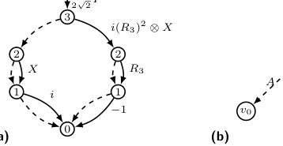
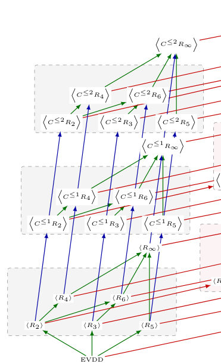
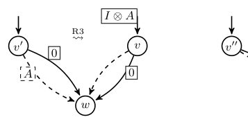
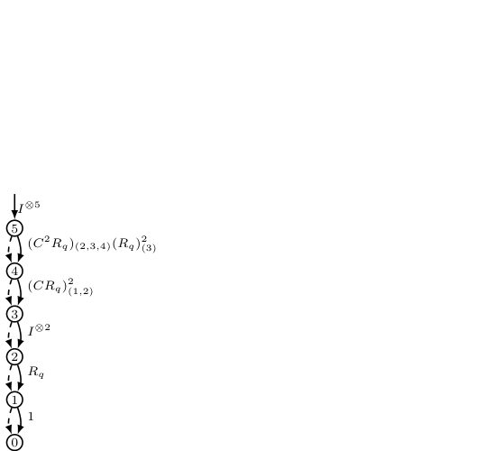
Summary. This paper generalizes decision diagrams by quotienting the state space by a group action derived from quantum gates (like phase rotations and bit flips). It proves that this generalization yields exponentially more succinct representations for quantum states, specifically characterizing hypergraph states. The methodology combines group theory with advanced algebraic minimization techniques to establish unique, efficiently computable canonical forms.
Why it may be interesting. This work provides a powerful, mathematically rigorous framework for compressing the description of complex quantum states (like those arising in quantum computation) using algebraic structures derived from quantum gates.
Main problem. The paper studies the structure, succinctness, and canonicity of decision diagrams when the standard equality condition is replaced by a quotienting by a group action (Generalized LIMDDs).
Main result. The proposed family of groups allows for unique normal forms computable in polynomial time, and the diagrams precisely characterize hypergraph states.
Method. The authors use algebraic methods involving group theory (quotienting by group orbits) and linear algebra (Gaussian elimination over Z2 and Zq) to establish canonical forms and determine the succinctness order.
Model / system. The model involves representing quantum states (specifically hypergraph states) using L-labeled decision diagrams whose edge labels are drawn from a group $\langle G angle$ generated by phase rotations ($R_q$) and controlled by qubits ($C_{\le k}R_q$).
Key observables. Succinctness (diagram size), canonicity (existence of unique normal form), and the structure of the stabilizer subgroup $ ext{Stab}(v)$.
Important parameters / regimes. The control arity ($k$) and the root order ($q$) of the generating group $\langle G angle$ are key parameters determining the exponential hierarchy of succinctness.
Assumptions / limitations. The analysis assumes the structure of the group $\langle G angle$ and relies on establishing canonical representations for nodes satisfying specific reduction rules (R1-R5).
Figures summary. Figure 1 illustrates an example of a $\langle R_3, X angle$-LIMDD and its 0-edge normal form. Figure 2 provides a 'Succinctness map' showing the exponential separations between different LIMDD families based on $q$, $k$, and $X$.
Paper structure. The paper develops the theory by first defining the generalized diagrams, then characterizing the group structure $\langle G angle$, establishing the minimization procedure for the normal form using linear algebra, and finally proving the exponential succinctness gains and the characterization of hypergraph states.
A reduced ordered decision diagram is the minimal automaton of a function on words of fixed length: its nodes are the residuals, and reduction is the Myhill--Nerode quotient. We study what happens when that quotient is coarsened by a group. Fix a group $G$ acting on residuals, merge two nodes when their residuals lie in one $G$-orbit, and record the group element on the edge. For functions $\{0,1\}^n\to\mathbb{C}$ and $G$ the Pauli group this is the Local Invertible Map Decision Diagram. We take $G$ from the two-parameter family generated by $C^{\leq k}R_q$, the phase rotation of order $q$ with up to $k$ control qubits, with and without the bit flip $X$. We show that this gives exponential succinctness improvements compared to Pauli-LIMDD, and we determine the succinctness order of the family completely. The separating objects are hypergraph states, which can always be efficiently represented by some member of the family. We settle the tractability of five queries and eight transformations, which is invariant across the family, and shows the same behavior as Pauli-LIMDD. We give a five-rule reduction system whose normal forms are unique for every member of the family, and we show that this canonical form is computable in polynomial time in the size of the LIMDD. We show that, when coarsening beyond the (anti-)diagonal groups, the calculation of a minimal sized normal form turns out to be non-local and it might to rebuild the whole diagram.
Authors: Upendra Kapshikar
Type: theory · Category: quantum information and computing · PDF: https://arxiv.org/pdf/2609.33956v1
Analysis basis: full PDF text, analyzed in chunks
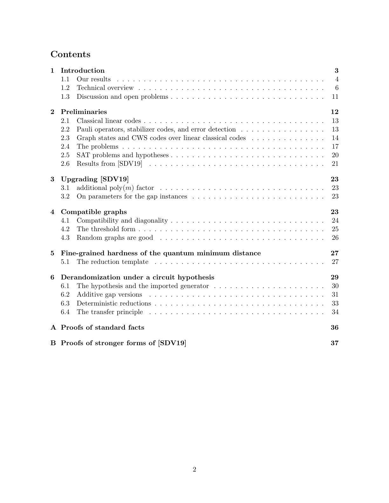
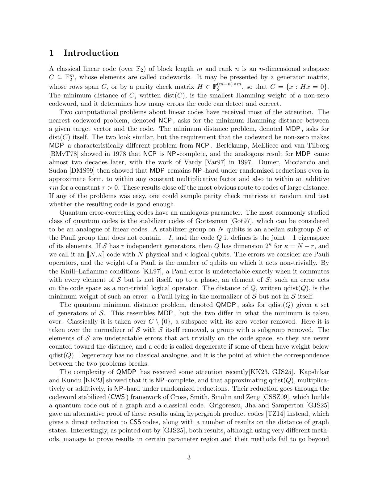
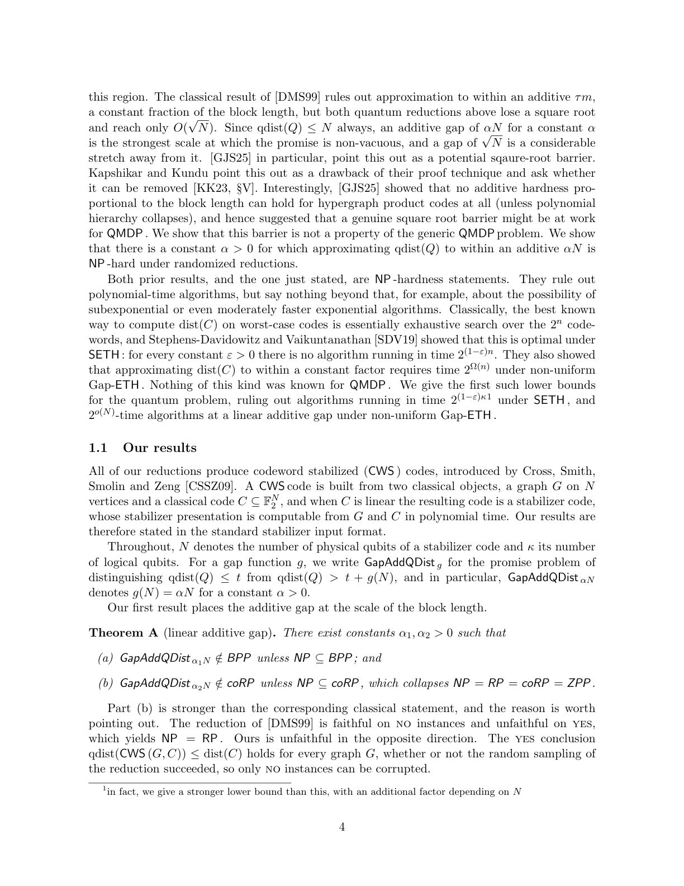
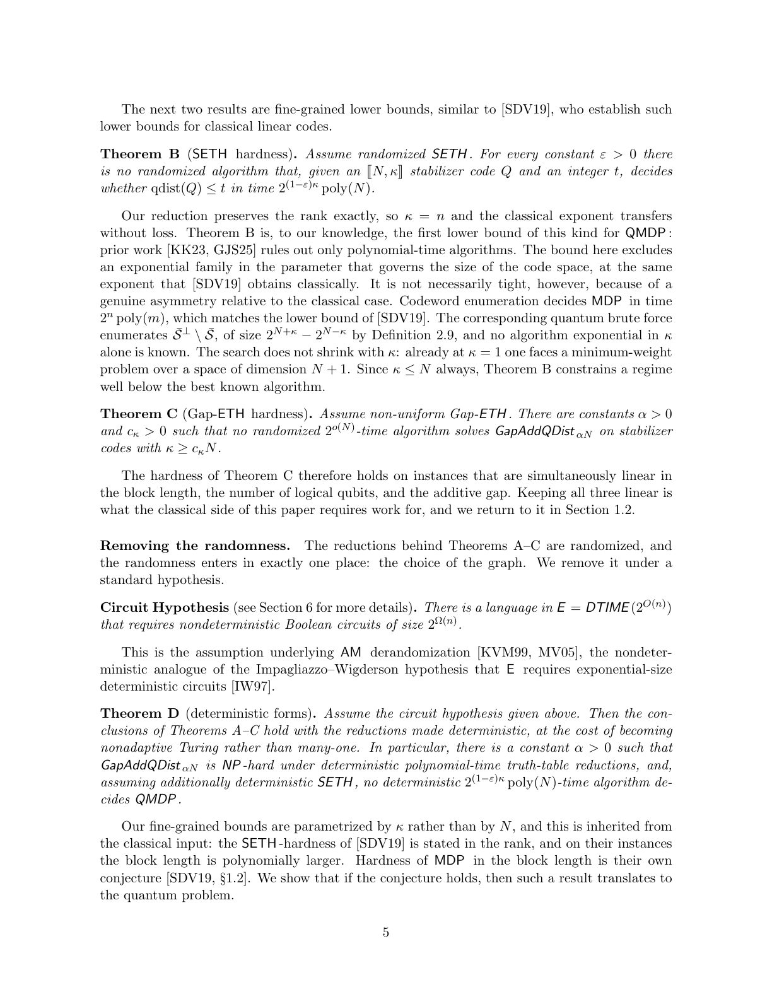
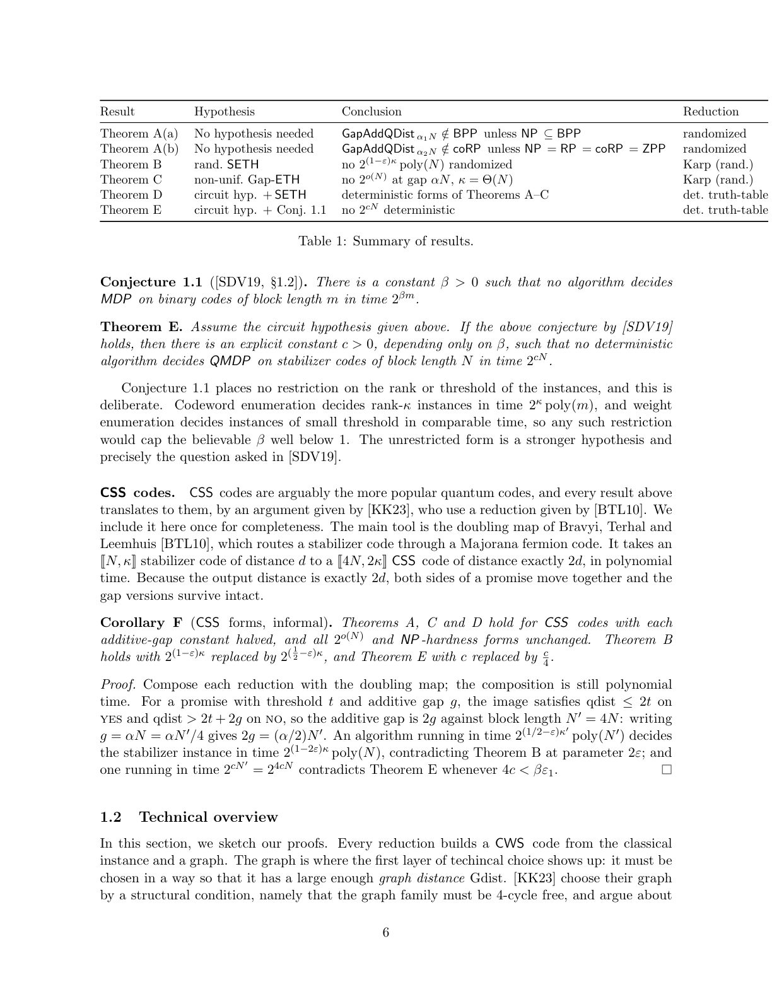
Summary. This paper rigorously analyzes the computational hardness of approximating the minimum distance of quantum stabilizer codes. It closes a prior theoretical gap by proving that achieving a linear approximation gap requires solving problems at the level of $ ext{NP}$-hardness. The results establish deep connections between quantum error correction and foundational complexity theory.
Why it may be interesting. This work provides fundamental computational limits on the efficiency of quantum error correction, which is crucial for understanding the feasibility of large-scale quantum computation.
Main problem. The paper addresses the computational complexity of approximating the minimum distance of a stabilizer quantum code (QMDP).
Main result. It establishes strong hardness results, showing that approximating the distance to within a linear additive gap ($\alpha N$) is $ ext{NP}$-hard unless $ ext{NP} \subseteq ext{coRP}$, and provides fine-grained lower bounds based on complexity assumptions like SETH.
Method. The authors use complexity-theoretic reductions, mapping hard classical problems (like $k$-SAT) to the quantum distance problem via Code from Graph (CWS) constructions.
Model / system. The focus is on quantum stabilizer codes, which are defined by an abelian subgroup of the Pauli group on $N$ qubits. The distance is the minimum weight of an error not in the stabilizer group.
Key observables. The quantum minimum distance, qdist(Q), is the primary observable of interest.
Important parameters / regimes. Block length ($N$), number of logical qubits ($\kappa$), and the approximation gap ($\alpha N$).
Assumptions / limitations. The hardness results rely on strong complexity assumptions, including $ ext{NP} \subseteq ext{coRP}$, randomized SETH, and non-uniform Gap-ETH.
Paper structure. The paper builds upon prior work by showing how to close the gap in previous $\sqrt{N}$ bounds, establishing hardness for linear gaps, and then proceeding to fine-grained analyses using various complexity assumptions.
We study the computational complexity of approximating the minimum distance of a stabilizer code. Classically, the minimum distance problem is NP-hard to approximate even to within an additive gap linear in the block length. For quantum codes, however, the reductions of Kapshikar and Kundu and of Grigorescu, Jha and Samperton reach only an additive $O(\sqrt{N})$ gap in the block length $N$. We close this gap and, in a separate direction, initiate the fine-grained study of the problem. We show that no randomized algorithm approximates the distance to within an additive $αN$, for a constant $α> 0$, unless $\mathsf{NP} \subseteq \mathsf{coRP}$. In the fine-grained setting, for every $\varepsilon > 0$, no randomized $2^{(1-\varepsilon)κ}\,\mathrm{poly}(N)$-time algorithm computes the distance of a code with $κ$ logical qubits unless SETH falls; and no randomized $2^{o(N)}$-time algorithm approximates the distance to within a linear additive gap, on instances where block length, number of logical qubits, and gap are simultaneously linear, unless non-uniform Gap-ETH falls.
Authors: Erika Bene, Tamás Vértesi
Type: theory · Category: quantum information and computing · PDF: https://arxiv.org/pdf/2609.35399v1
Analysis basis: full PDF text, analyzed in chunks
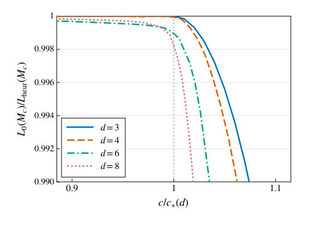
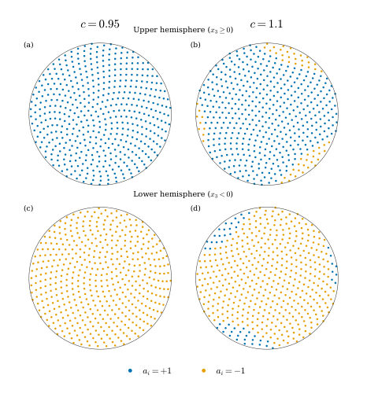
Summary. This theoretical paper derives improved heuristic lower bounds for the real Grothendieck constant, a quantity relevant to quantum information theory. The authors use a cubic kernel analysis to conjecture a new lower bound, significantly improving existing mathematical limits. The work also constructs specific matrices using high-dimensional lattices, linking abstract functional analysis to quantum correlation testing.
Why it may be interesting. The connection between bounding fundamental mathematical constants like $K_G$ and the structure of quantum correlations (Bell inequalities) provides deep theoretical insights into the limits of quantum information processing.
Main problem. The paper aims to establish heuristic lower bounds on the real Grothendieck constants, $K_G(d)$ and its infinite limit $K_G$. This constant is relevant to bounding the quantum-to-classical ratio in correlation Bell expressions.
Main result. The authors conjecture a new lower bound $K_G \geq 9\pi/16 \simeq 1.767146$ using a cubic kernel, which improves upon the previously known bound of $6\pi/11$.
Method. The primary method involves analyzing the stability of 'hemispherical binary strategies' under cubic boundary deformations of rotationally invariant kernels, supplemented by large-scale optimization on finite dimensions using lattice constructions.
Model / system. The mathematical framework involves optimizing ratios of quadratic forms defined by real matrices derived from unit vectors on the sphere, connecting functional analysis to quantum correlation bounds.
Key observables. The real Grothendieck constant $K_G(d)$ and its infinite limit $K_G$.
Important parameters / regimes. The cubic kernel parameter $c$, the critical parameter $c^*(d) = (d+1)(d+3) / (3(d+5))$, and the dimension $d$ (up to 24).
Assumptions / limitations. The main conjecture is that hemispherical strategies are globally optimal at the critical threshold $c^*(d)$, and that the finite-setting lower bounds are exact.
Paper structure. The paper develops the problem by defining the Grothendieck constant using kernels, analyzes the continuous case using cubic deformations to find a conjectured bound, and then extends the results to finite dimensions using lattice-based matrix constructions.
We propose candidate lower bounds on the real Grothendieck constants $K_{\mathrm G}(d)$ and their infinite-dimensional limit $K_{\mathrm G}$ using rotationally invariant cubic kernels. For the continuous construction, we identify an explicit threshold above which hemispherical binary strategies are unstable under cubic boundary deformations. Supported by numerical evidence, we conjecture that hemispherical strategies are globally optimal at this threshold. This conjecture would imply $K_{\mathrm G}\geq9π/16\simeq1.767146$, improving the rigorous lower bound $6π/11\simeq1.713596$. We also construct finite symmetric coefficient matrices from unit vectors in dimensions up to $24$. Large-scale see-saw optimization supports the continuous predictions and suggests improved lower bounds on $K_{\mathrm G}(d)$ in the studied dimensions from $4$ to $24$, conditional on the conjectured binary optima being exact. Selected matrices also yield finite-setting candidate dimension witnesses when interpreted as bipartite correlation Bell functionals. If the corresponding binary upper bounds hold, these witnesses would certify a local Hilbert-space dimension of at least five for each party.
Authors: Marien Raat, Merlin Incerti-Medici, James R. Wootton, Evert van Nieuwenburg, Daniel Bultrini
Type: theory · Category: quantum information and computing · PDF: https://arxiv.org/pdf/2609.35511v1
Analysis basis: full PDF text, analyzed in chunks
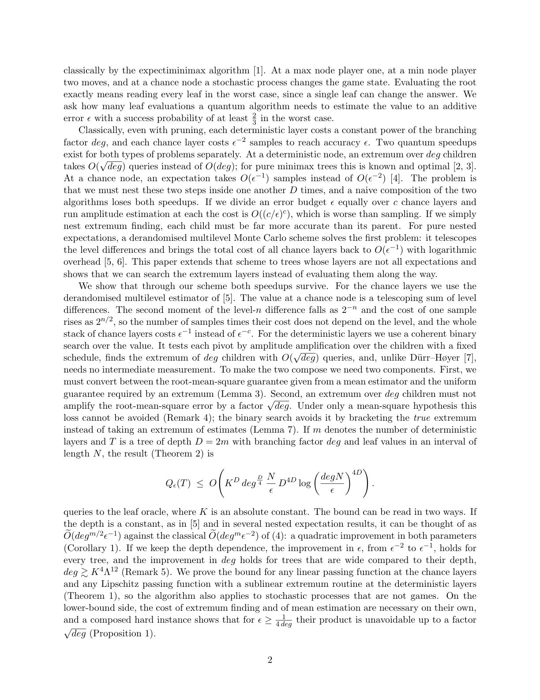
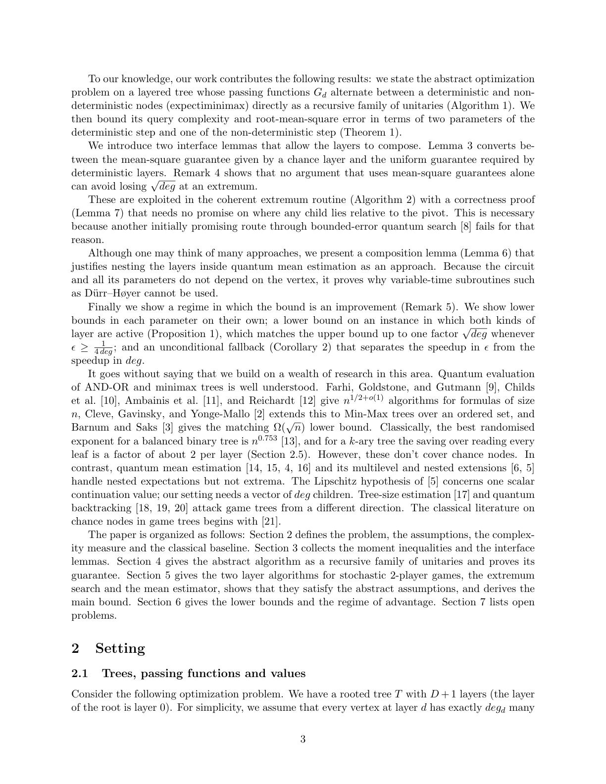
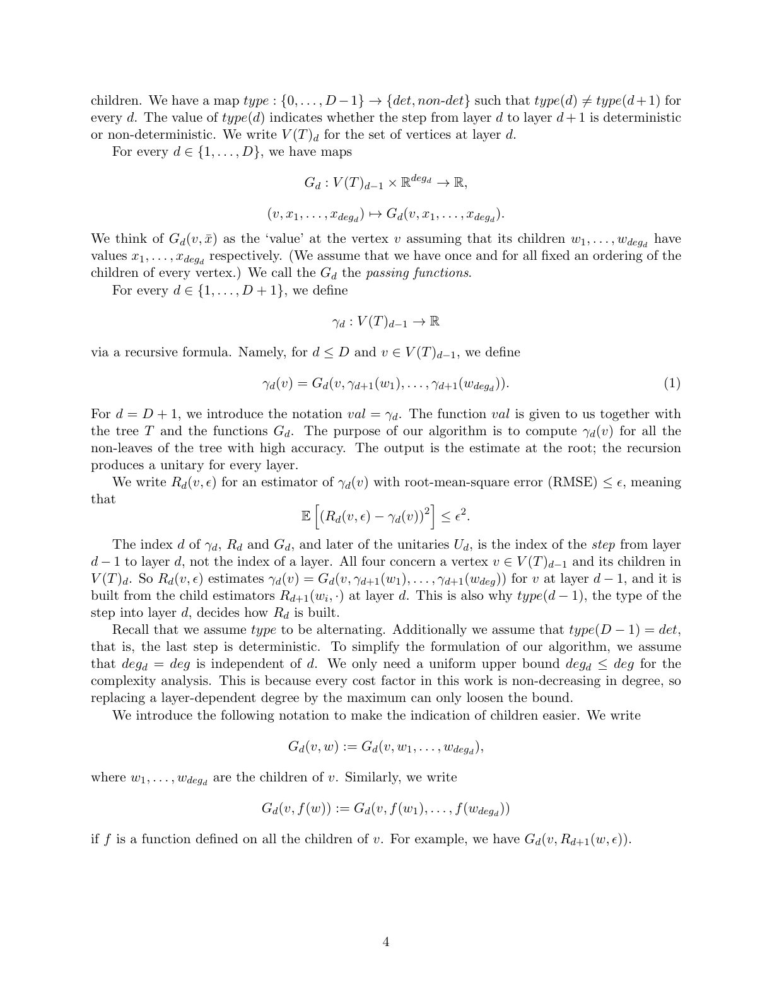
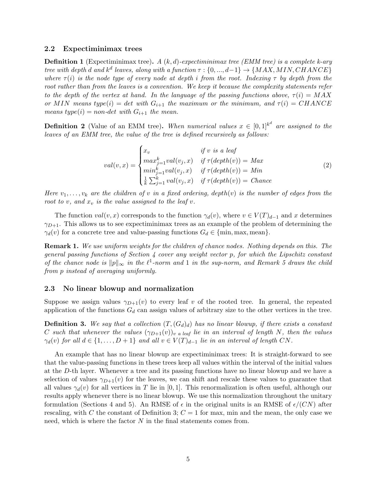
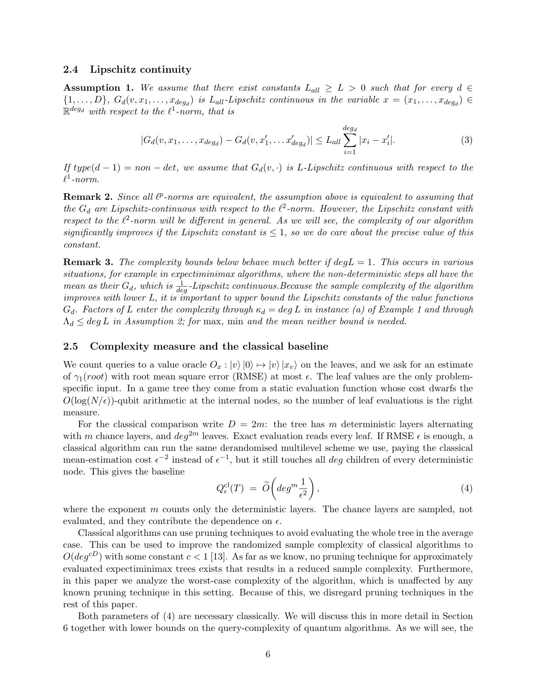
Summary. This paper presents a quantum algorithm to efficiently estimate the value of stochastic games modeled by expectiminimax trees. By combining quantum techniques like multilevel Monte Carlo estimation and coherent binary search, it achieves significant query complexity speedups over classical methods. This work is important for understanding the limits of quantum computation in solving complex, multi-stage decision-making problems.
Why it may be interesting. The techniques developed for bounding query complexity in nested, alternating structures are highly relevant for analyzing quantum algorithms applied to complex decision processes or quantum simulation of structured interactions.
Main problem. The paper develops a quantum algorithm to estimate the value of stochastic 2-player games, which are modeled by expectiminimax trees.
Main result. The quantum algorithm achieves a query complexity bound that shows quadratic speedups compared to classical methods in both the branching factor and the required accuracy.
Method. It employs a combination of a derandomised multilevel Monte Carlo estimator for chance layers and a coherent binary search for adversarial layers, utilizing quantum amplitude amplification.
Model / system. The model is the stochastic 2-player game represented by an expectiminimax tree, which alternates between adversarial (max/min) and chance (mean) layers.
Key observables. The estimated value of the game at the root, with a target Root Mean Square Error (RMSE) of $\epsilon$.
Important parameters / regimes. Depth ($D$), branching factor ($ ext{deg}$), interval length ($N$), and the error tolerance ($\epsilon$).
Assumptions / limitations. The value function must be Lipschitz continuous, and the value at chance vertices must be linear in their children's values for the speedup to hold.
Figures summary. Not specified.
Paper structure. The paper builds upon existing quantum algorithms for simpler tree structures (AND-OR, minimax) and extends them recursively to handle the nested structure of chance nodes within the expectiminimax framework, culminating in complexity bounds derived via induction.
We give a quantum algorithm for stochastic $2$-player games. Their game trees are the expectiminimax trees of classical game search: $m$ adversarial layers alternate with $m$ chance layers, every node has $deg$ children, and the leaf values lie in an interval of length $N$. The algorithm estimates the value of the game to root mean square error $ε$ with \[ O\!\left( K^{D}\, deg^{\frac{D}{4}} \, \frac{N}ε \, D^{4D} \log\left( \frac{deg N}ε \right)^{4D} \right), \qquad D = 2m \] queries to the leaf values, where $K$ is an absolute constant. If we treat the depth $D$ as a constant as is sometimes done in the literature, the bound is $\widetilde O(deg^{m/2}ε^{-1})$ against the classical $\widetilde O(deg^{m}ε^{-2})$. So the quadratic speedup in the branching factor known for adversarial trees and the quadratic speedup in the accuracy known for a single expectation both survive when we nest one inside the other. We use a derandomised multilevel Monte Carlo estimator for chance layers and a coherent binary search for adversarial layers. The composition is done by introducing a conversion between root-mean-square and uniform error guarantees, and a composition to nest it with quantum mean estimation. We state the algorithm for stochastic games, but it is valid for the following conditions: the value of a parent is a Lipschitz function of the values of its children and the value at a chance vertex is linear in its children, however the speedup is preserved only if the deterministic step has a quantum subroutine with sublinear query complexity.
Authors: Vadim Ionas, Jonas Elsborg, Felix Ærtebjerg, Arghya Bhowmik
Type: theory · Category: disordered systems and neural networks · PDF: https://arxiv.org/pdf/2609.32858v1
Analysis basis: full PDF text, analyzed in chunks
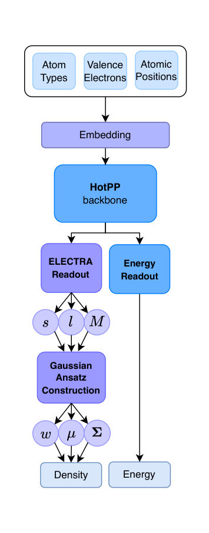
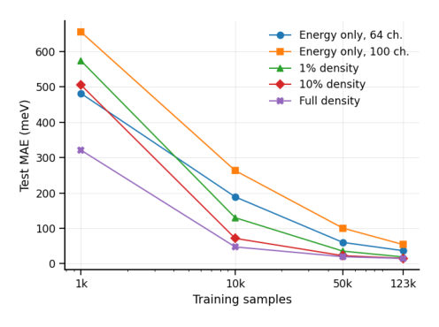
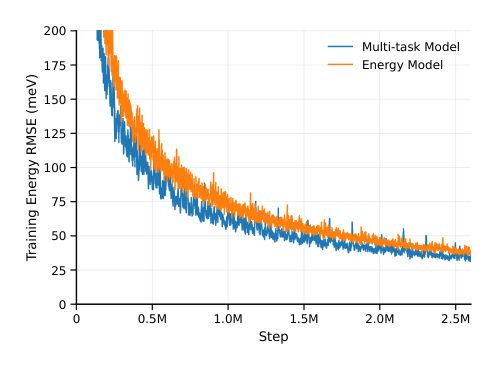
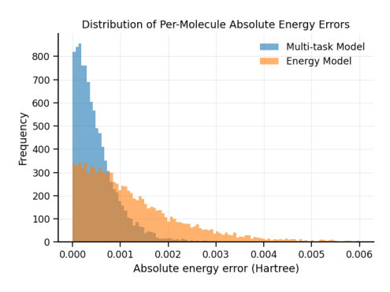
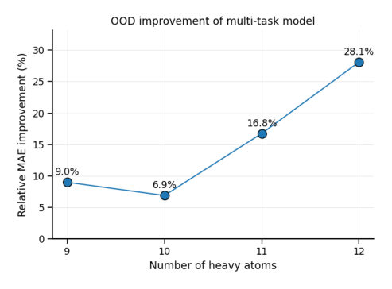
Summary. This work introduces a multi-task graph neural network framework that jointly learns molecular energies and electron densities. By forcing the model to utilize the spatial information from the electron density during energy prediction training, the authors demonstrate a significant improvement in accuracy and data efficiency. This provides a powerful, physically grounded method for developing next-generation machine learning potentials for molecular simulations.
Why it may be interesting. While focused on condensed matter/chemistry, the methodology—using physical constraints (density) to regularize a representation learned for a primary task (energy)—is highly relevant to developing robust ML potentials for complex quantum systems.
Main problem. The paper aims to improve the accuracy and data efficiency of predicting molecular energetics by jointly training a machine learning model on both the molecular energy and the electron density.
Main result. Jointly supervising the model with electron density supervision significantly improves energy prediction accuracy, achieving substantial reductions in Mean Absolute Error compared to energy-only training.
Method. A multi-task learning framework using a Graph Neural Network (GNN) is employed, where the shared molecular representation is trained to predict both the global energy and the spatially resolved electron density.
Model / system. The system studied is molecules, represented by atomic structures and coordinates. The model uses a GNN architecture that learns a shared, equivariant molecular representation from which task-specific heads predict the energy and density.
Key observables. Molecular energy (global scalar label) and electron density (spatially resolved field).
Important parameters / regimes. Loss weights (alpha, beta), GNN channel widths, and the fraction of density data used for supervision.
Assumptions / limitations. The core assumption is that the rich spatial information contained in the electron density distribution can serve as a physically meaningful regularizer to improve the learning of the total molecular energy.
Figures summary. The notes refer to tables summarizing model configurations and hyperparameters, comparing energy-only vs. multi-task approaches across varying data fractions.
Paper structure. The paper introduces the multi-task GNN framework, details the joint loss function combining energy and density losses, presents comparative results showing the benefit of density supervision, and discusses limitations and future directions.
We present a graph neural network-based learning framework trained to jointly predict electron densities and molecular energies. The model is trained to predict electron densities calculated with a Generalized Gradient Approximation (GGA) functional while simultaneously learning to predict molecular energies obtained with hybrid functional calculations at the B3LYP level of theory. Our results indicate that the rich spatial information in electron density distribution can be used to improve and accelerate the learning of accurate energies. By sharing an equivariant molecular representation across density and energy prediction heads, the model learns complementary molecular quantities within a unified framework. This provides a new promising route for practical use cases of many recent charge density learning frameworks for atomic scale simulations.
Authors: Dibyendu Sardar, François Lique
Type: theory · Category: other · PDF: https://arxiv.org/pdf/2609.34713v1
Analysis basis: full PDF text, analyzed in chunks
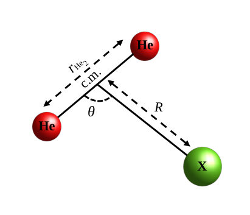
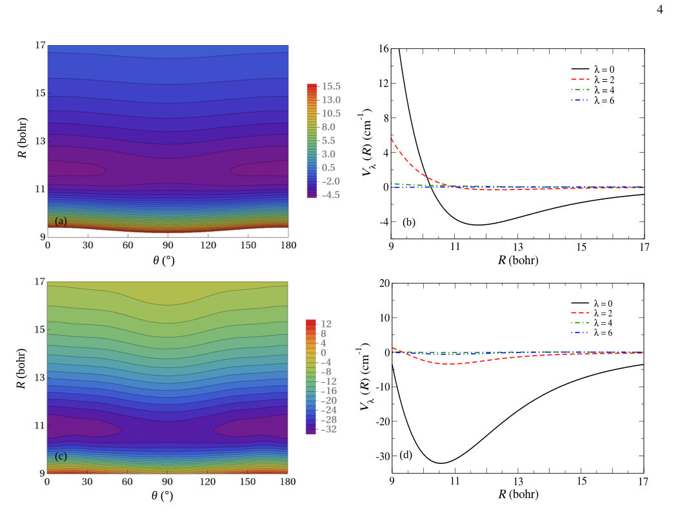
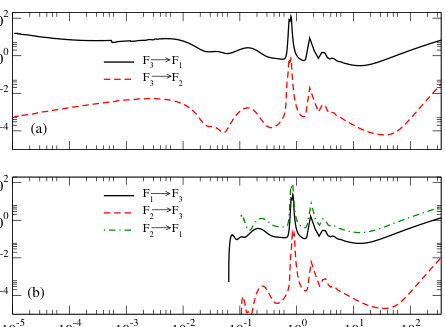
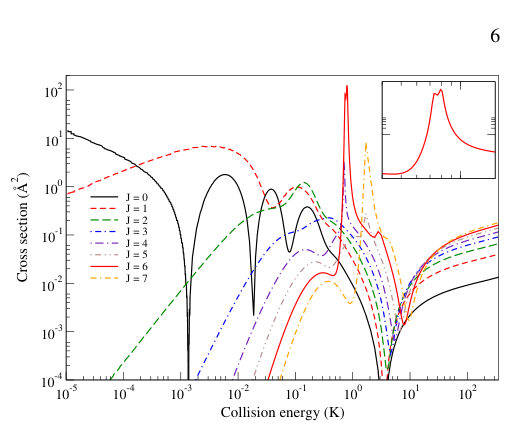
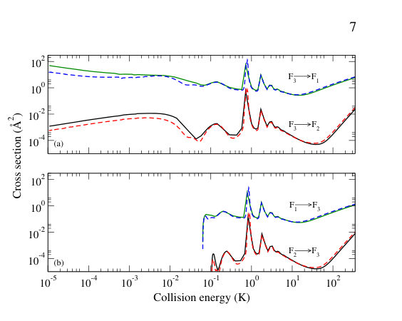
Summary. This theoretical study calculates the interaction potentials and collision dynamics for the metastable helium dimer interacting with Neon and Argon. By performing detailed quantum scattering calculations, the authors reveal that the $ ext{He}_2+ ext{Ar}$ system exhibits a richer resonance structure than $ ext{He}_2+ ext{Ne}$. The results establish crucial theoretical benchmarks for interpreting future experimental measurements in the field of cold molecular physics.
Why it may be interesting. This work is highly relevant as it uses advanced quantum scattering theory to model interactions in the ultracold regime, a cornerstone of modern AMO physics. The detailed comparison between $ ext{Ne}$ and $ ext{Ar}$ provides insights into how atomic properties (like polarizability or reduced mass) dictate quantum scattering resonances.
Main problem. The study investigates the intermolecular interactions and collision dynamics of the metastable triplet-state helium dimer ($ ext{He}_2(a\ ^3\Sigma^+_u)$) with noble gas atoms ($ ext{Ne}$ and $ ext{Ar}$) in ultracold and cold energy regimes.
Main result. The $ ext{He}_2+ ext{Ar}$ system exhibits a richer resonance structure compared to $ ext{He}_2+ ext{Ne}$, highlighting the sensitivity of low-energy scattering to the interaction potential and reduced mass. The calculated properties provide theoretical benchmarks for future experiments.
Method. The authors employed high-level ab initio methods, including spin-restricted coupled cluster ($ ext{RCCSD(T)}$) and multireference configuration interaction ($ ext{MRCISD}$), to construct potential energy surfaces ($ ext{PES}$). Full close-coupling calculations were then performed to analyze scattering dynamics.
Model / system. The system involves the $ ext{He}_2(a\ ^3\Sigma^+_u)$ dimer interacting with $ ext{Ne}$ and $ ext{Ar}$. The $ ext{PES}$ for $ ext{He}_2+ ext{Ne}$ was constructed by averaging over the ground vibrational state, while the $ ext{He}_2+ ext{Ar}$ system was analyzed using more complex correlated methods.
Key observables. Scattering cross sections for excitation and quenching transitions, resonance structure, and the interaction potential depth ($\approx 4.612 ext{ cm}^{-1}$ for $ ext{He}_2+ ext{Ne}$).
Important parameters / regimes. Ultracold and cold collision energies, fine-structure levels of $ ext{He}_2(a\ ^3\Sigma^+_u)$, and the reduced mass of the colliding pair.
Assumptions / limitations. The $ ext{He}_2+ ext{Ne}$ $ ext{PES}$ is vibrationally averaged over the ground vibrational state ($v=0$), and the $ ext{He}_2+ ext{Ar}$ $ ext{PES}$ treatment involves specific approximations regarding the molecular Hamiltonian.
Figures summary. The notes mention figures comparing scattering cross sections using 2D vs. 3D-averaged $ ext{PES}$ for $ ext{He}_2+ ext{Ne}$, and showing cross sections vs. collision energy for $ ext{He}_2+ ext{Ar}$.
Paper structure. The paper first establishes the theoretical framework by calculating the $ ext{PES}$ for $ ext{He}_2+ ext{Ne}$ and $ ext{He}_2+ ext{Ar}$ using advanced quantum chemistry methods. It then proceeds to perform full close-coupling calculations to analyze low-energy scattering dynamics, comparing the results obtained from different dimensionality treatments (2D vs. 3D-averaged $ ext{PES}$) and comparing the $ ext{Ne}$ and $ ext{Ar}$ interactions.
Helium dimer in its metastable triplet electronic state, He$_2(a~^3Σ_u^+)$, is a promising candidate for direct laser cooling and precision measurements. Interactions and collisions involving He$_2(a~^3Σ_u^+)$ remain unexplored in ultracold and cold energy domains. Here, we present the first theoretical investigation of intermolecular interactions and collision dynamics of He$_2(a~^3Σ_u^+)$+Ne van der Waals complex. For the ground electronic state, $X~^3\mathrm{A}'$, we employ a spin-restricted coupled cluster method with single, double, and noniterative triple excitations. The resulting interaction potential exhibits an extremely shallow well with a depth of 4.612 cm$^{-1}$. We construct a three-dimensional vibrationally averaged potential energy surface. Using this surface, we perform full close-coupling calculations including fine-structure levels of He$_2(a~^3Σ_u^+)$ to investigate collisional excitation and quenching induced by Ne. We analyze the low-energy scattering dynamics and model resonant features associated with quasi-bound states supported by interaction potential. Propensity rule for fine-structure conserving transitions is established. We additionally consider He$_2$+Ar collisions and compare their energy dependence and resonance structure with those of He$_2$+Ne. The He$_2$+Ar system exhibits a richer resonance structure, highlighting the sensitivity of low-energy scattering to interaction potential and reduced mass. Calculated PES and scattering properties provide a reliable benchmark for description of He$_2$+Ne van der Waals complex and may be useful for interpretation of future experimental spectra and collision measurements.
Authors: Koki Okada, Kenta Kasai
Type: theory · Category: quantum information and computing · PDF: https://arxiv.org/pdf/2609.35601v1
Analysis basis: full PDF text, analyzed in chunks
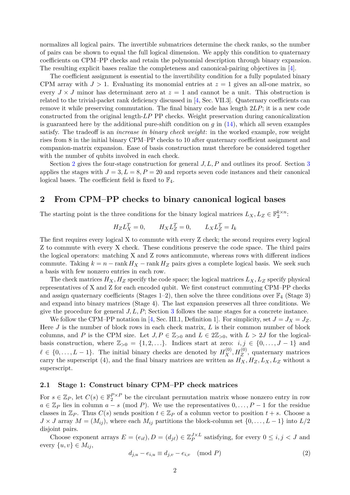
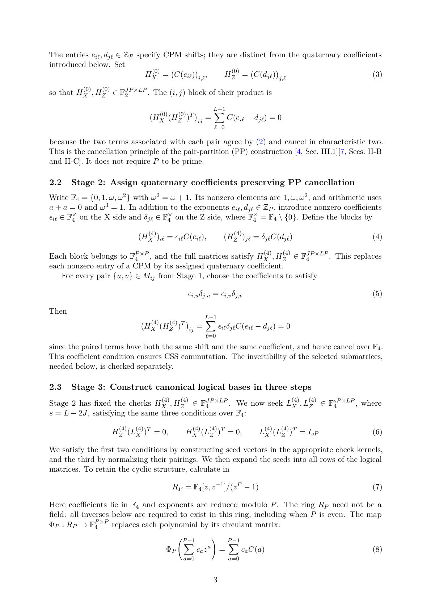
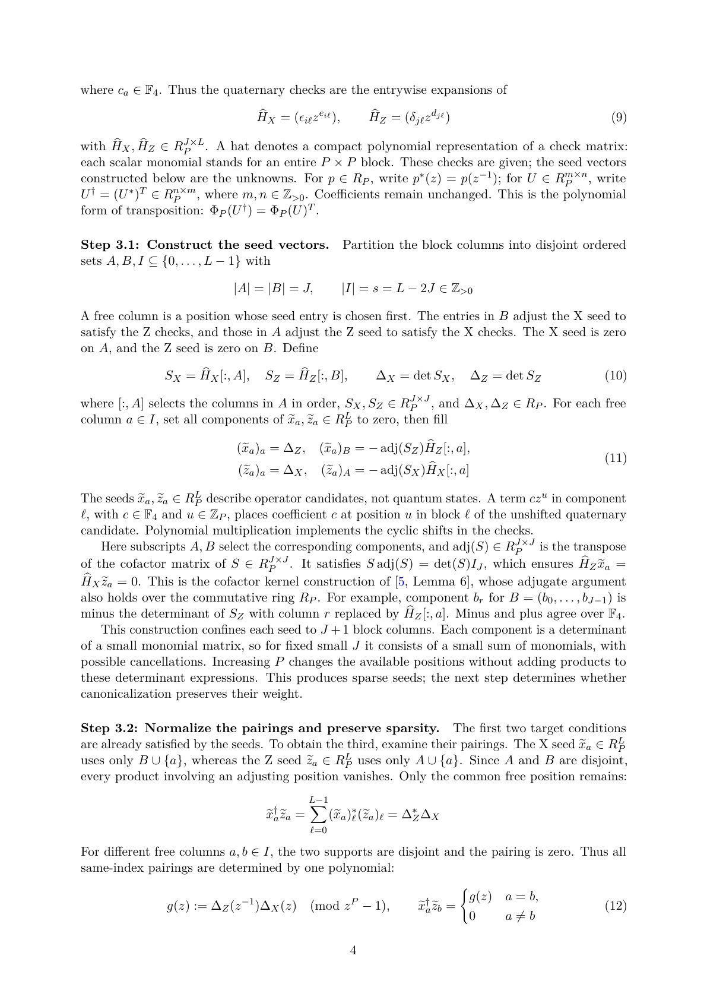
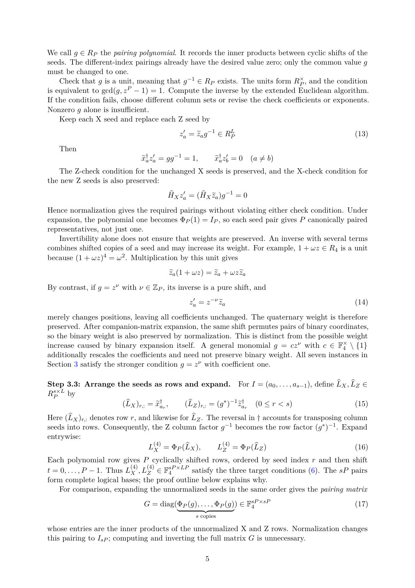
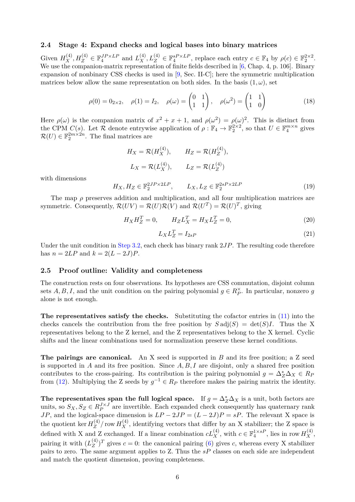
Summary. This paper presents a sophisticated algebraic method to construct complete canonical logical bases for qubit CSS quantum error-correcting codes derived from Pair-Partition codes. It utilizes quaternary coefficients and polynomial algebra to ensure the logical representatives span the entire logical space. The result provides explicit construction procedures and parameters for several high-performance quantum codes.
Why it may be interesting. While highly abstract, the rigorous algebraic construction of error-correcting codes is foundational to quantum computation theory, providing concrete tools for designing fault-tolerant quantum hardware.
Main problem. The paper focuses on constructing complete canonical logical bases for qubit CSS quantum error-correcting codes.
Main result. A polynomial method using quaternary coefficients successfully constructs these canonical logical bases, yielding specific examples with high minimum distances.
Method. The construction involves a multi-stage process: building initial binary checks, assigning quaternary coefficients ($\mathbb{F}_4$) to satisfy commutation relations, constructing logical matrices over $\mathbb{F}_4$, and finally expanding these into binary matrices.
Model / system. The model is the qubit CSS code, defined by binary check matrices $H_X$ and $H_Z$. The construction is applied to Pair-Partition (PP) codes, utilizing circulant permutation matrices (CPMs) and algebraic techniques over polynomial rings.
Key observables. Code parameters $[[n, k, d]]$, check ranks, and the binary weights of the canonical logical representatives (e.g., 25, 27).
Important parameters / regimes. The construction is stated for general block dimensions ($J, L, P$), and examples include parameters like $[[320, 80, 14]]$ and $[[2048, 512, 24]]$.
Assumptions / limitations. The method assumes the existence of invertible submatrices on disjoint column sets for the check systems, and it relies on the invertibility of a pairing polynomial $g(z)$.
Figures summary. The notes reference tables summarizing the parameters of seven constructed codes, detailing the resulting $[[n, k, d]]$ values and basis weights.
Paper structure. The paper follows a structured algebraic development: defining the problem (canonical bases), detailing the four stages of construction (initial checks, $\mathbb{F}_4$ assignment, $\mathbb{F}_4$ logical matrices, binary expansion), and concluding with specific examples and parameter reporting.
We construct complete canonical logical bases for qubit CSS codes by assigning quaternary coefficients to binary circulant permutation matrix pair-partition (CPM-PP) checks, constructing and normalizing logical representatives, and expanding the result into binary matrices. When the two check systems have invertible submatrices on disjoint column sets, cofactor representatives are canonically paired by the inverse of a single pairing polynomial. The resulting pairs span the entire logical space. When the pairing polynomial is a cyclic-shift monomial with coefficient one, normalization preserves the binary weights of the representatives. We state the construction for general block dimensions and CPM size, work through a corresponding example, and report the parameters, check ranks, and basis weights of seven binary codes. Representative examples have parameters $[[320,80,14]]$, $[[448,112,18]]$, and $[[2048,512,24]]$. All three have maximum check weight 10 on both the X and Z sides. Their canonical logical representatives have binary weights 25, 27, and 27, respectively, on both the X and Z sides.
Authors: Robin Reuvers
Type: theory · Category: other · PDF: https://arxiv.org/pdf/2609.33498v1
Analysis basis: full PDF text, analyzed in chunks
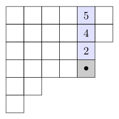
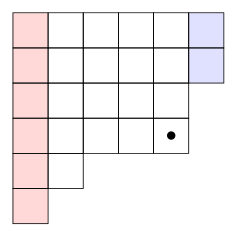
Summary. This theoretical paper studies quantum channels associated with adding or removing a box from a Young diagram, connecting representation theory to quantum information theory. It proves that coherent states minimize the output entropy for these channels and derives a generalized Pauli principle bounding the spectrum of reduced density matrices for systems with permutation symmetry.
Why it may be interesting. The connection between representation theory (Young diagrams) and fundamental quantum information concepts like entropy minimization and generalized uncertainty principles makes this highly relevant for theoretical quantum physics.
Main problem. The paper determines the minimal output entropy for quantum channels that add or remove a single box from a Young diagram, and establishes a generalized Pauli principle for systems exhibiting permutation symmetry.
Main result. Coherent states are proven to minimize the output entropy for the relevant quantum channels, and a sharp bound (generalized Pauli principle) is found for the spectrum of the reduced density matrix.
Method. The analysis uses representation theory of U(d), covariant quantum channels derived from isometric intertwiners, and majorization inequalities analogous to Lieb's conjecture.
Model / system. The model involves quantum channels connecting irreducible representations of U(d) whose Young diagrams differ by one box. The application considers N particles with a given permutation symmetry.
Key observables. Minimal output entropy, the spectrum of the reduced density matrix ($\gamma$), and the optimal output computed using hook lengths.
Important parameters / regimes. The size and structure of the Young diagrams ($\lambda$), the number of particles ($N$), and the dimension $d$.
Assumptions / limitations. The analysis relies on the existence of covariant quantum channels and the applicability of majorization arguments derived from coherent state properties.
Figures summary. Figure 1 illustrates the spectrum of the output channel $\Psi^-( ho_0)$ for removing a box, and Figure 2 illustrates the duality between removing a box from $\lambda^+$ and adding a box to its complement.
Paper structure. The paper systematically analyzes four types of quantum channels ($\Phi^\pm, \Psi^\pm$) connecting representations differing by one box, proving the majorization property and identifying coherent states as minimizers. It then applies these results to derive the generalized Pauli principle for reduced density matrices.
Two irreducible representations of $U(d)$ whose Young diagrams differ by a single box are connected by four covariant quantum channels: the box can be removed or added, and one keeps either the new diagram or the box ($\mathbb{C}^d$ or its dual). We prove that for each of these channels the output of a coherent state majorizes every other output, so that coherent states minimize the output entropy, and we compute the optimal output explicitly in terms of hook lengths. For the two channels that keep the box we also determine all minimizers; these need not be coherent, even when they are pure. As an application we consider $N$ particles with a given permutation symmetry and find sharp bounds on the spectrum of the reduced density matrix of a single particle, as well as the exact set of spectra that mixed states can reach (for fermions these are the Pauli principle and Coleman's theorem).
Authors: Johann Pototschnig, Franz Pöschel, Jürg Hutter, Thomas D. Kühne
Type: theory · Category: disordered systems and neural networks · PDF: https://arxiv.org/pdf/2609.34055v1
Analysis basis: full PDF text, analyzed in chunks
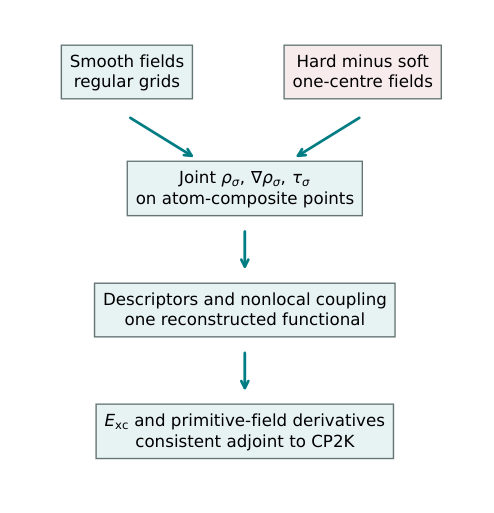
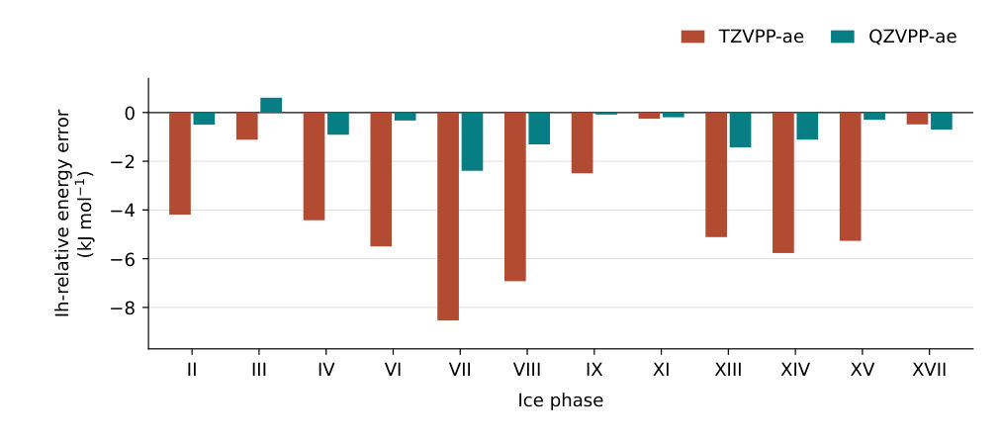
Summary. This work details the native implementation of the machine-learned Skala exchange-correlation functional in the CP2K code for solid-state physics. The authors introduce a joint one-centre reconstruction technique to ensure accuracy across different basis sets and calculation types. The results demonstrate high accuracy for lattice energies and band gaps, advancing the capability of DFT codes to incorporate complex, data-driven XC functionals.
Why it may be interesting. While focused on solid-state DFT, the rigorous development of a machine-learned functional and its integration into a complex, multi-basis-set framework (GPW/GAPW) showcases advanced computational physics techniques relevant to developing next-generation quantum simulation tools.
Main problem. The paper addresses the challenge of natively implementing the machine-learned Skala exchange-correlation (XC) functional within the CP2K code for both molecular and condensed-phase electronic structure calculations.
Main result. The implementation successfully achieves low mean absolute errors (MAE) for lattice energies (e.g., 1.16 kJ mol-1 for ice phases) and band gaps (0.43 eV) compared to high-level benchmarks like DMC, while also identifying systematic structural overbinding issues.
Method. The core methodological contribution is a joint one-centre reconstruction of the density, density gradients, and kinetic-energy density before functional evaluation, which is necessary to correctly handle the nonlocal and mixed gradient terms of the Skala functional in both Gaussian and plane-wave basis sets.
Model / system. The calculations are performed on various molecular crystals and the thirteen crystalline ice phases (DMC-ICE13). The underlying theory is Density Functional Theory (DFT) utilizing the machine-learned Skala XC functional.
Key observables. Mean Absolute Error (MAE) for lattice energies (e.g., 1.16 kJ mol-1), MAE for band gaps (0.43 eV), and the resulting equilibrium lattice constants.
Important parameters / regimes. The calculation methods include Gaussian and plane-wave (GPW) and Gaussian and augmented-plane-wave (GAPW) approaches, alongside Brillouin-zone sampling and point-group symmetry reduction.
Assumptions / limitations. The primary assumption is that the joint one-centre reconstruction correctly preserves the necessary mixed gradient terms and nonlocal couplings required by the Skala functional in the periodic limit, although systematic overbinding was noted.
Figures summary. The notes describe comparisons of band gaps across various functionals (PBE, SCAN, HSE, etc.) and methods (AE vs. GTH vs. Mixed 1C), showing performance metrics like MAE and ME.
Paper structure. The paper details the necessity of the joint one-centre reconstruction for Skala in CP2K's native machinery (GPW/GAPW). It then presents quantitative results comparing the accuracy of the implemented functional against DMC and benchmark sets for both molecular and solid-state properties, concluding with a discussion of structural limitations.
We implement the machine-learned Skala exchange-correlation (XC) functional natively in CP2K using its Gaussian and plane-wave (GPW) and Gaussian and augmented-plane-wave (GAPW) methods. A joint one-centre reconstruction of density, density gradients, and kinetic-energy density before functional evaluation preserves mixed gradient terms and nonlocal couplings between smooth and atom-local contributions in all-electron and pseudopotential calculations. An XC-specific GAPW representation resolves rapidly varying local contributions on atom-centred grids, reducing plane-wave requirements for pseudopotential calculations. The implementation includes Brillouin-zone sampling and point-group symmetry reduction. With sufficiently flexible orbital bases, it retains the molecular benchmark accuracy of our earlier GauXC formulation. All-electron Skala-D3(BJ) calculations yield a mean absolute error (MAE) of 1.54 kJ mol$^{-1}$ against diffusion Monte Carlo for crystalline CO$_2$, NH$_3$, and urea, spanning dispersion, quadrupolar electrostatics, and hydrogen bonding. For all thirteen DMC-ICE13 phases, the MAEs are 1.16 kJ mol$^{-1}$ for absolute lattice energies and 0.82 kJ mol$^{-1}$ for the twelve relative energies to ice Ih. At fixed experimental geometries, all-electron/mixed-core calculations give a band-gap MAE of 0.43 eV on a 15-material set, substantially below commonly used semilocal functionals and comparable to widely used hybrid functionals. The LC10 benchmark nevertheless reveals systematically underestimated equilibrium lattice constants, indicating structural overbinding. This framework connects molecular Skala to condensed-phase electronic structure and enables future development using periodic many-body reference data.
Authors: Neilson Carlos Leite Ramalho, Higor Amario de Souza, Anthony Accioly, Valter Vieira de Camargo, Marcos Lordello Chaim
Type: both · Category: quantum information and computing · PDF: https://arxiv.org/pdf/2609.33255v1
Analysis basis: full PDF text, analyzed in chunks
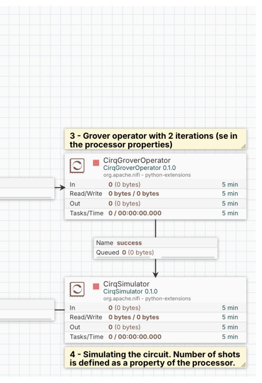
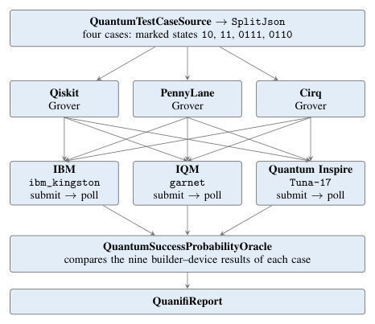
Summary. This paper introduces Quanifi, a novel software engineering platform built on Apache NiFi to unify disparate quantum programming frameworks. It enables N x M execution, allowing researchers to systematically test the same quantum circuit across multiple software implementations and hardware backends. This methodology proved vital for debugging subtle, hard-to-find defects in current quantum toolchains.
Why it may be interesting. This work addresses the crucial engineering challenge of quantum software reliability, providing a systematic, verifiable testing framework that is essential before quantum algorithms can be trusted for physical simulations.
Main problem. Quantum software engineering is hampered by the need to learn multiple, disparate frameworks (like Qiskit, Cirq, PennyLane), each with its own toolchain for building and running quantum circuits.
Main result. The authors developed Quanifi, a dataflow tool using Apache NiFi, which enables N x M program execution to systematically test quantum algorithms across multiple frameworks and hardware engines, successfully uncovering several real-world defects.
Method. They designed Quanifi to package high-level routines as components exchanging circuits via the standardized OpenQASM 2.0 format, allowing for systematic cross-platform testing.
Model / system. The system models quantum computation by abstracting the circuit construction and execution process into a dataflow graph on NiFi. The physical system involves qubits and quantum circuits executed on various simulators or quantum hardware.
Key observables. Disagreements in measurement results, which can be traced to a specific framework implementation, an execution engine, or the pair combination.
Important parameters / regimes. The number of frameworks (N) and the number of execution engines (M) used in the N x M testing matrix.
Assumptions / limitations. The primary assumption is that using a standardized intermediate representation (OpenQASM 2.0) can bridge the gap between proprietary framework toolchains.
Figures summary. Figure 1 illustrates a Grover pipeline built on the NiFi canvas, showing the sequential flow through various processors representing different framework operations.
Paper structure. The paper introduces the problem of quantum software fragmentation, presents Quanifi as the solution using NiFi and OpenQASM 2.0, details the N x M execution methodology, and validates the approach by reporting defects found on real quantum hardware.
Quantum computing has in recent years evolved from a purely theoretical field to an active area in both academia and industry. As a result, Quantum Software Engineering has emerged as an area that aims to organize the process of building, testing, and running quantum software. However, writing quantum software still requires programming with quantum gates and qubits, as well as knowledge specific to quantum software frameworks such as Qiskit, Cirq, Qrisp, pyQuil and PennyLane, each of which reaches quantum hardware through its own toolchain. We present Quanifi, which packages the high-level routines of these frameworks as components on the Apache NiFi dataflow canvas. The components exchange circuits as OpenQASM 2.0, so a circuit built by one framework can be executed by another. This allows for two types of redundancy: several frameworks implement the same algorithm, and several engines (simulators or real hardware) execute the same circuit. We describe N$\times$M program execution, which crosses the two: a single NiFi flow runs each of the $N$ implementations on each of the $M$ engines, and because every result is labelled with its implementation and its engine, a disagreement can be linked to an implementation, to an engine, or to a single implementation-engine pair. We ran Grover's algorithm built by three frameworks on three quantum computers from IBM, IQM and Quantum Inspire, and a matrix of three adder builders on one IQM device reached through two routes. N$\times$M execution helped us discover three real defects: an incorrect gate-set declaration in the Quantum Inspire adapter, execution consistent with negated $R_x$ angles on Tuna-17, and circuit modification through Open Quantum. The latter two returned wrong answers without reporting an error. We reported all three defects and Open Quantum's provider confirmed and fixed its QASM parsing defect.
Authors: Ban Q. Tran, Nahid Binandeh Dehaghani, Susan Mengel, Rafal Wisniewski, A. Pedro Aguiar
Type: theory · Category: disordered systems and neural networks · PDF: https://arxiv.org/pdf/2609.33700v1
Analysis basis: full PDF text, analyzed in chunks
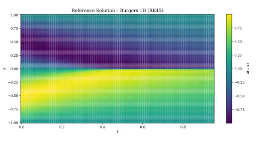
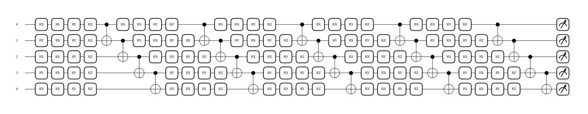
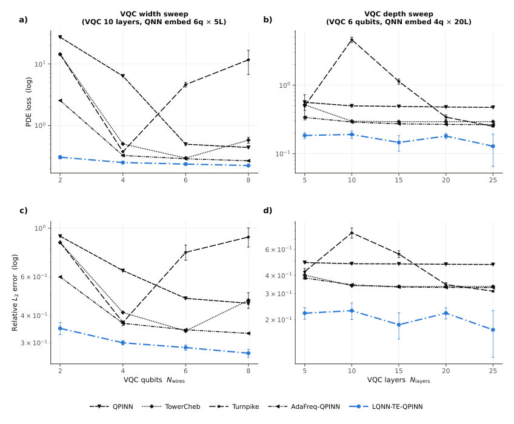
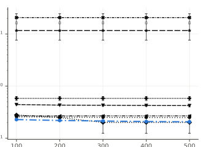
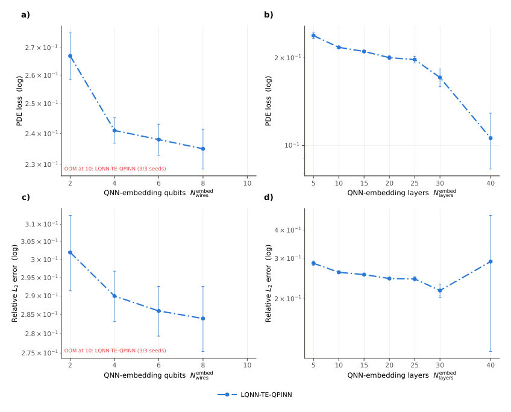
Summary. This paper investigates how the input embedding mechanism affects the performance of Quantum Physics-Informed Neural Networks (QPINNs) for solving PDEs. The authors propose and test two advanced embedding designs, demonstrating that these architectural choices significantly impact the network's approximation accuracy and robustness, especially when simulating quantum noise.
Why it may be interesting. This work is highly relevant as it pushes the boundary of applying quantum computation to classical scientific modeling problems, directly impacting how quantum information theory informs the numerical solution of physical laws.
Main problem. The research addresses the poorly understood role of the embedding mechanism within Quantum Physics-Informed Neural Networks (QPINNs) used to solve Partial Differential Equations (PDEs).
Main result. The proposed trainable embedding designs, particularly LQNN-TE-QPINN, significantly improve the approximation accuracy of QPINNs compared to direct encoding, especially in 1D and under simulated noise.
Method. The authors introduce and compare novel embedding frameworks—LQNN-TE-QPINN and AdaFreq-QPINN—by modifying how input coordinates are mapped into the quantum state used for PDE residual calculation.
Model / system. The model is a QPINN framework applied to solving PDEs (e.g., Burgers equation). The core structure involves mapping classical coordinates $\xi$ through an embedding $E$ to generate a quantum state $|\psi angle = U_{var} U_{enc} |0 angle$, whose expectation value approximates the PDE solution.
Key observables. Relative $L_2$ error, training objective value, and absolute derivative error, particularly when subjected to various simulated quantum noise channels.
Important parameters / regimes. Trainable parameters associated with the embedding (e.g., frequency-scaling factors) and the strength ($\epsilon$) of the simulated quantum noise.
Assumptions / limitations. The primary assumption is that modifying the embedding design can substantially influence the approximation and optimization behavior of the QPINN, though the optimal choice depends on the specific problem.
Figures summary. The notes mention figures comparing the RMS error of the second derivative ($\partial^2 u / \partial x^2$) across different models under varying quantum noise strengths and measurement shot counts.
Paper structure. The paper first establishes the QPINN framework for solving PDEs. It then details the unified embedding formulation, proposing and evaluating specific trainable embeddings (LQNN-TE-QPINN and AdaFreq-QPINN) against baselines. Finally, it rigorously tests these designs using 1D and 2D Burgers equations, including extensive analysis under simulated hardware noise.
Quantum physics-informed neural networks (QPINNs) solve partial differential equations (PDEs) by training parameterized quantum circuits against physics-based residuals, yet the role of the embedding that maps coordinates into quantum states remains insufficiently understood. In this research, we introduce a unified embedding framework that formulates embedding as a functional transformation shaping the feature representation available to the variational circuit, and we propose two embeddings within it. The Linear Quantum Neural Network Trainable Embedding QPINN (LQNN-TE-QPINN) generates data-dependent features with an auxiliary quantum circuit and adds them to the input coordinates, instead of multiplying them as in our previous formulation. The adaptive-frequency QPINN (AdaFreq-QPINN) promotes the frequency-scaling factors of an arccos-Chebyshev encoding to trainable parameters. We evaluate both against direct and fixed analytical frequency encodings and alternative hybrid architectures on one- and two-dimensional Burgers equations. In one dimension, LQNN-TE-QPINN achieves a relative $L_2$ error of 0.0916 with 720 trainable parameters, compared with 0.4501 for direct-encoding QPINN and 0.1233 for a locally adaptive classical physics-informed neural network with approximately eleven times more parameters, while AdaFreq-QPINN attains the lowest error among the analytical embeddings with only four additional parameters. In two dimensions, LQNN-TE-QPINN attains the lowest training objective, although its solution error is not clearly separated from that of a data re-uploading QPINN. Under simulated hardware noise, LQNN-TE-QPINN retains the lowest absolute derivative error while degrading most relative to its noiseless baseline. These results demonstrate that embedding design substantially influences the approximation and optimization behavior of QPINNs.
Authors: Zikun Li, Zhuoming Chen, Zhihao Jia
Type: theory · Category: quantum information and computing · PDF: https://arxiv.org/pdf/2609.33997v1
Analysis basis: full PDF text, analyzed in chunks
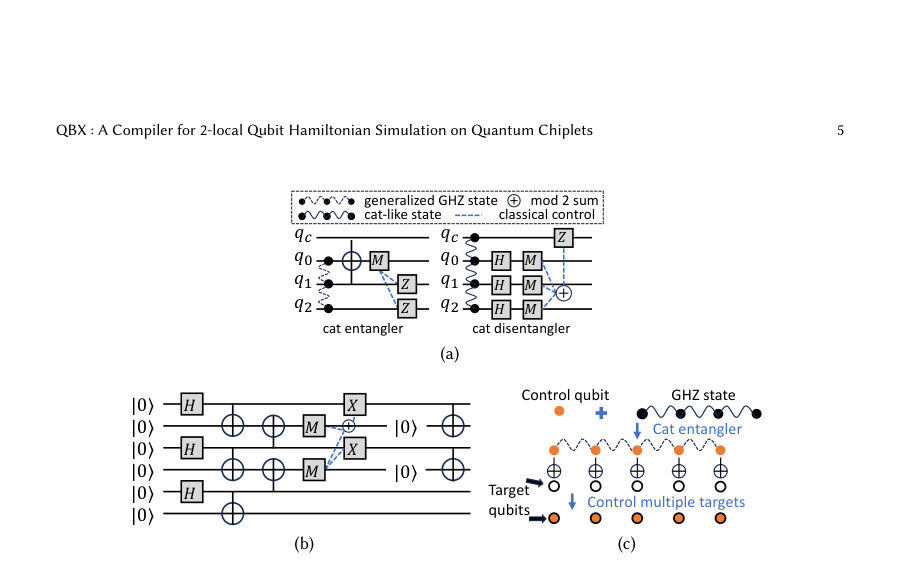
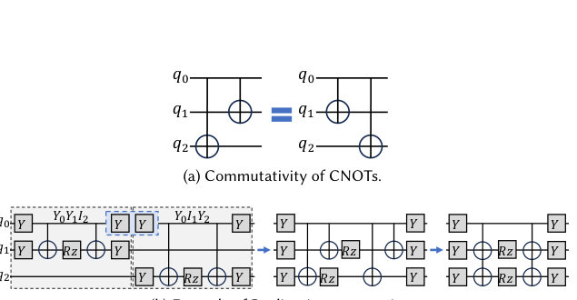
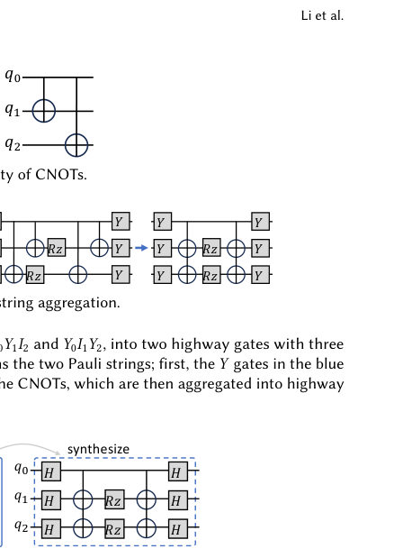
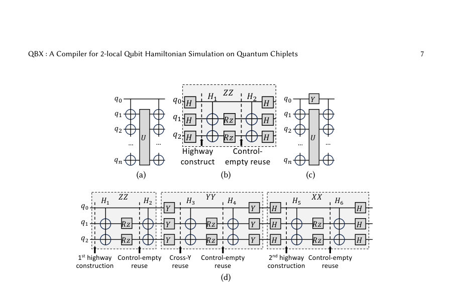
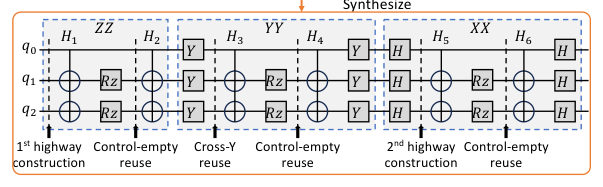
Summary. This paper introduces QBX, a novel quantum compiler designed specifically for simulating 2-local qubit Hamiltonians on modular quantum chiplet architectures. QBX overcomes limitations in existing compilers by implementing a hierarchical strategy that efficiently minimizes cross-chiplet communication using a 'highway' mechanism. The compiler demonstrates superior performance in circuit depth and operation count compared to current state-of-the-art tools.
Why it may be interesting. This work is highly relevant as it tackles the critical hardware-software co-design problem for near-term quantum computation, providing a concrete compiler optimization strategy tailored for modular, scalable quantum hardware architectures.
Main problem. The paper addresses the challenge of efficiently compiling 2-local qubit Hamiltonian simulations for quantum computing devices built using scalable quantum chiplet architectures.
Main result. The proposed compiler, QBX, significantly outperforms existing general-purpose and domain-specific compilers in terms of circuit depth and operation count, especially when scaling to larger simulations.
Method. QBX employs a static hierarchical compiler approach that optimizes for chiplet topology by aggregating 2-local Pauli strings into multi-target controlled gates, utilizing a specialized 'highway' mechanism for long-range communication.
Model / system. The simulation targets the time evolution governed by a 2-local qubit Hamiltonian, $H = \sum_j \lambda_j P_j$, which is decomposed into Pauli strings. The physical platform is explicitly modeled as a quantum chiplet architecture (MCM) to address scalability limitations.
Key observables. Circuit depth, operation count, and the amount/distance of cross-chiplet communication.
Important parameters / regimes. The number of qubits, the number of chiplets (e.g., 3, 6, 12, 16), and the structure of the 2-local Pauli strings.
Assumptions / limitations. The primary assumption is that the benefits of using highways for cross-chiplet communication outweigh the cost of constructing them, and that the simulation can be accurately decomposed into 2-local Pauli strings.
Figures summary. Figures illustrate the synthesis of exponential terms of 2-local Pauli strings using highway gates, the mechanism for multi-target control, and comparisons showing QBX's superior performance metrics (depth/CNOT count) against competitors.
Paper structure. The paper introduces the problem gap (general vs. domain-specific compilers), details the QBX methodology (hierarchical mapping, highway mechanism, Pauli set aggregation), presents extensive comparative evaluations against state-of-the-art compilers, and concludes with performance analysis showing scalability benefits.
2-local qubit Hamiltonian simulation, a fundamental task in quantum computing, is widely applied in various applications. This paper presents QBX, the first quantum compiler designed for 2-local qubit Hamiltonian simulation on quantum chiplet architectures. Existing general-purpose quantum compilers for chiplet architectures target quantum programs at the gate level and miss optimizations requiring high-level semantics of Hamiltonian simulation. Conversely, existing domain-specific compilers for Hamiltonian simulation are designed for monolithic architectures, and their limited scalability and inability to adapt to the heterogeneity of chiplet architectures lead to sub-optimal circuit outputs. QBX implements a scalable hierarchical approach to reduce both the amount and distance of cross-chiplet communications. It integrates the highway mechanism, a chiplet-oriented solution for efficient long-range qubit communication, to diminish cross-chiplet interaction costs. Furthermore, QBX efficiently aggregates 2-local Pauli strings into multi-target controlled gates, harnessing highways for deep optimization. Our evaluations show that QBX markedly outperforms both general-purpose and domain-specific compilers in circuit depth and operation count, while scaling to much larger 2-local Hamiltonian simulations.
Authors: Pranav Gupta
Type: theory · Category: quantum information and computing · PDF: https://arxiv.org/pdf/2609.35581v1
Analysis basis: full PDF text, analyzed in chunks
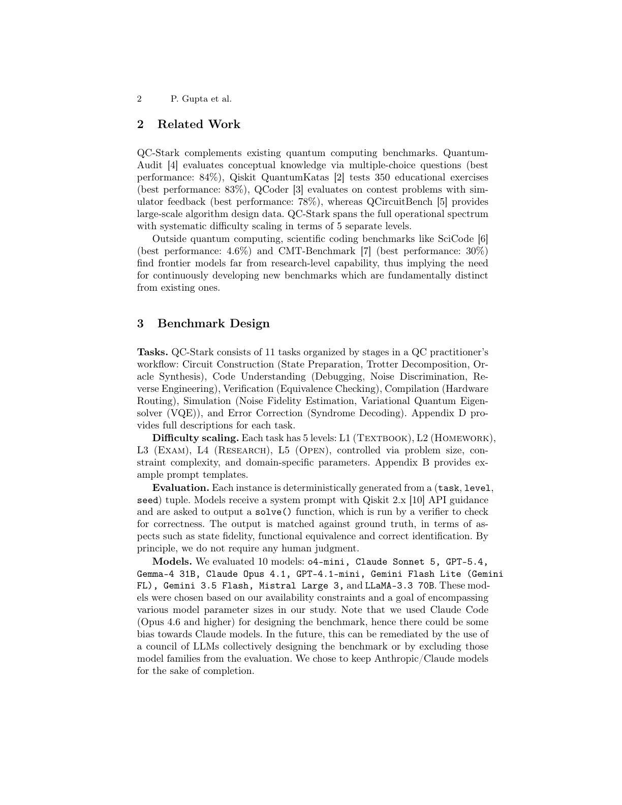
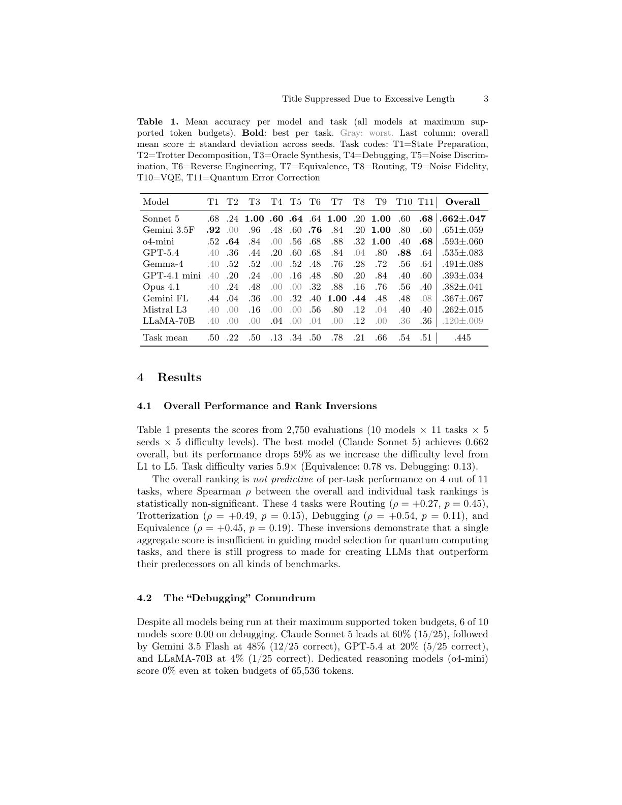
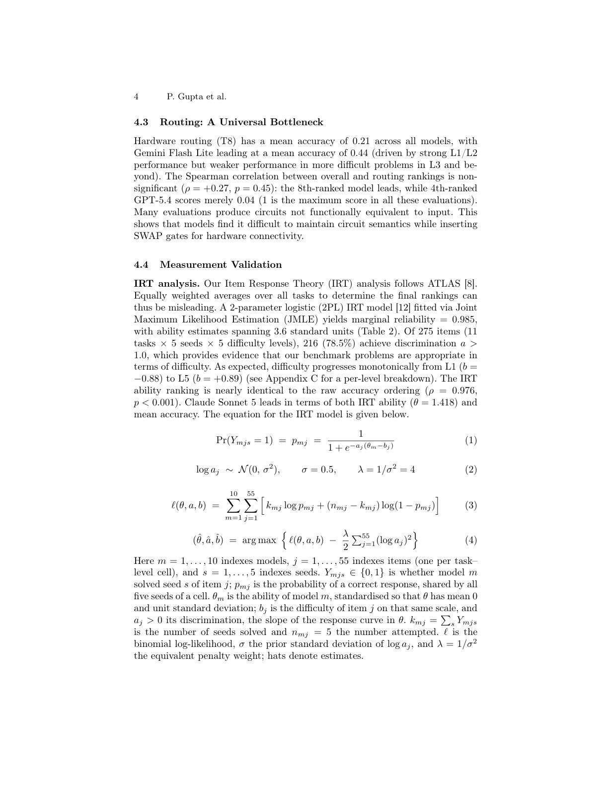
Summary. This paper introduces QC-Stark, a comprehensive benchmark designed to test LLMs on 11 diverse quantum computing tasks, ranging from circuit construction to error correction. The key finding is that overall performance metrics fail to predict performance on individual tasks, suggesting that quantum competence is highly specialized. The work is significant for establishing reliable, automated evaluation standards for quantum AI applications.
Why it may be interesting. While focused on LLMs, the rigorous testing of quantum algorithms (VQE, QEC, etc.) provides a challenging, multi-faceted testbed for assessing the underlying reasoning capabilities required for advanced quantum computation.
Main problem. The paper addresses the need for a comprehensive benchmark to evaluate Large Language Models (LLMs) across the full spectrum of practical quantum computing tasks, revealing potential dissociations in model capabilities.
Main result. Overall LLM performance rankings are not predictive of per-task performance for several quantum computing tasks, indicating that quantum competence is not a single, unified skill.
Method. The authors introduce QC-Stark, a benchmark involving 11 distinct quantum tasks (e.g., debugging, compilation, VQE) across five difficulty levels, evaluated using auto-verifiable execution.
Model / system. The system under test is the LLM, evaluated on tasks involving quantum circuits, state preparation, error correction, and quantum algorithms like VQE. The benchmark uses Qiskit 2.x Python output for verification.
Key observables. Spearman correlation ($ ho$) between overall and per-task rankings, mean accuracy per model/task, and performance degradation rate across difficulty levels (L1 to L5).
Important parameters / regimes. 11 tasks, 5 difficulty levels, 2,750 total evaluations, and parameters derived from the 2-parameter Item Response Theory (IRT) model.
Assumptions / limitations. The benchmark requires Qiskit 2.x Python output, which risks conflating genuine quantum knowledge with proficiency in a specific framework's API.
Figures summary. The notes mention tables detailing performance metrics, IRT parameters ($ heta, b, a$), prompt sensitivity ($\Delta$), and mean accuracy across difficulty levels.
Paper structure. The paper introduces the QC-Stark benchmark, details the 11 quantum tasks (T1-T11), presents the results showing task-specific performance variations, validates the measurement quality using IRT, and discusses limitations.
We introduce QC-Stark, a benchmark for evaluating large language models (LLMs) on 11 quantum computing (QC) tasks, spanning circuit construction, debugging, compilation, error correction, and simulation. Across 2,750 evaluations (10 models $\times$ 11 tasks x 5 difficulty levels x 5 seeds), we find that overall rankings mask substantial per-task variation. The Spearman correlation between overall and per-task rankings is statistically insignificant for 4 out of the 11 tasks included in this benchmark. A 2-parameter Item Response Theory (IRT) model validates measurement quality, and prompt sensitivity analysis confirms ranking robustness across prompt conditions. All tasks are auto-verifiable via execution, thus not requiring any manual evaluation. We make the code and data publicly available on Huggingface.
Authors: Tai-Hsuan Yang
Type: theory · Category: quantum information and computing · PDF: https://arxiv.org/pdf/2609.33815v1
Analysis basis: full PDF text, analyzed in chunks
Summary. This theoretical paper derives exact mathematical equalities for the quantum relative-entropy loss, moving beyond the known inequality. It decomposes this loss into quantifiable physical components related to state reconstructibility and modular dynamics. The work establishes optimal recovery bounds using sophisticated complex analysis techniques.
Why it may be interesting. The rigorous mathematical framework connecting fundamental quantum inequalities (like the data processing inequality) to exact equalities provides deep structural insights into quantum information measures, which is crucial for understanding quantum channel capacity and fidelity.
Main problem. The paper aims to promote the quantum data processing inequality—which states that quantum relative entropy is non-increasing under quantum channels—to an exact equality.
Main result. The relative-entropy loss is exactly decomposed into two non-negative physical mechanisms: an operational Petz recovery component and a boundary term. Furthermore, optimal square-root scaling recovery bounds are established.
Method. The derivation heavily relies on advanced complex analysis techniques, specifically employing Poisson integral representations across a complex strip to establish integral identities for the entropy loss.
Model / system. The analysis concerns quantum channels ($\Phi$) acting on density matrices ($ ho, \sigma$) and involves concepts like the relative entropy, the Belavkin–Staszewski (BS) loss, and the averaged Petz recovery state ($ au$).
Key observables. Relative-entropy loss ($\Delta$), measured relative entropy loss ($\Delta - D_M( ho\| au)$), and the Belavkin–Staszewski (BS) loss.
Important parameters / regimes. The analysis is performed across a complex strip, involving modular parameters ($s$) and variational parameters ($\omega$).
Assumptions / limitations. The derivations assume the existence of analytic functions on a complex strip and rely on techniques from functional analysis, such as Poisson integral formulas.
Figures summary. Not specified in the notes, but the structure implies the use of integral representations (Equations I.2, I.3, II.8, II.10, etc.) to prove identities.
Paper structure. The paper builds from establishing the Poisson integral representation for the entropy loss, deriving exact identities for the measured relative entropy gap and the BS loss, and concluding with the establishment of optimal pointwise recovery bounds.
The quantum data processing inequality asserts that quantum relative entropy is monotonically non-increasing under quantum channels. Here, we promote this fundamental inequality to an exact equality via boundary and surface Poisson integral representations across a complex strip. The relative-entropy loss is resolved into two independent, nonnegative physical mechanisms: an operational Petz recovery component governing state reconstructibility, and a boundary term measuring the mismatch of relative modular dynamics. We further express the loss as the measured relative entropy between the original state and its averaged Petz recovery state plus a nonnegative variational remainder. For the Belavkin--Staszewski (BS) loss, analogous integral representations yield a decomposition into negative log Uhlmann fidelity with an averaged reconstruction plus a nonnegative variational remainder. Furthermore, we establish recovery bounds at any prescribed modular parameter, including the canonical unrotated Petz map, with optimal square-root scaling in the relative entropy loss. The prefactors depend on distinct-eigenvalue counts or logarithmic spectral quantities, improving upon the inverse-power dependence on small eigenvalues in previous bounds.
Authors: Zineb Hazmoun, Zoubida Sakhi, Mohamed Bennai
Type: both · Category: quantum information and computing · PDF: https://arxiv.org/pdf/2609.34617v1
Analysis basis: full PDF text, analyzed in chunks
Summary. This paper tests how varying the entanglement structure within a Variational Quantum Classifier (VQC) affects its ability to diagnose breast cancer. By comparing three distinct three-qubit circuit topologies, the authors found that richer entanglement structures correlate with better classification metrics. However, they caution that this correlation is not statistically significant, suggesting that circuit expressivity is a complex factor beyond just entanglement.
Why it may be interesting. It applies quantum circuit analysis (entanglement measures) to a practical machine learning task, providing insights into how hardware connectivity constraints (Hamiltonian structure) impact quantum algorithm performance.
Main problem. The study investigates the relationship between the specific entangling structure of a Variational Quantum Classifier (VQC) and its diagnostic performance when applied to breast cancer data.
Main result. While increasing the entangling structure (from Ising to Heisenberg type) correlated with higher entanglement and better performance metrics, the statistical correlation between entanglement and performance was found to be weak and not significant.
Method. The authors compared three three-qubit VQC configurations (A, B, C) using the EfficientSU2 ansatz and evaluated performance via five-fold cross-validation.
Model / system. The model is a Variational Quantum Classifier (VQC) applied to the Wisconsin Diagnostic Breast Cancer (WDBC) dataset. The configurations differ in their entangling structure: single-repetition Ising, two-repetition linear Ising, and fully connected Heisenberg-type coupling.
Key observables. Von Neumann entropy, Wootters concurrence, Accuracy, and F1-score.
Important parameters / regimes. Three-qubit system, COBYLA optimizer, stratified five-fold cross-validation.
Assumptions / limitations. The observed correlation is an association, not a proven causal link, because changing the structure simultaneously alters expressivity, connectivity, and depth.
Figures summary. Figures conceptually link QML for healthcare to circuit structure and entanglement; one figure shows the increasing trend of entanglement measures (EE, Conc) and performance metrics (Accuracy, F1-score) from A to C.
Paper structure. The paper establishes the problem (QML for diagnosis), details the methodology (VQC setup, three configurations A, B, C, and entanglement/performance measurements), presents results showing increasing trends, and concludes with a cautious interpretation regarding causality.
This study looks at how the entangling structure of a variational quantum classifier (VQC) relates to its performance in breast cancer diagnosis, using the Wisconsin Diagnostic Breast Cancer (WDBC) dataset. We tested three three-qubit configurations that share the same EfficientSU2 ansatz, COBYLA optimizer, and stratified five-fold cross-validation, but differ in their entangling structure: a single- repetition Ising-type coupling (A), a two-repetition linear Ising-type coupling (B), and a fully connected Heisenberg-type coupling (C). Entanglement was measured with the von Neumann entropy and the Wootters concurrence. From A to C, the mean entropy rose from 0.40 to 0.71, accuracy rose from 92.98% to 93.68%, and F1-score rose from 90.32% to 91.28%. Configuration C was also the most stable across folds. However, the fold-level correlations between entanglement and performance were weak and not significant. Richer topologies also increase circuit expressivity, so the two effects cannot be fully separated. These results show an association, not a proven causal link, between entangling structure and VQC performance.
Authors: Srinivasan Arunachalam, Yanlin Chen, Amin Shiraz Gilani
Type: theory · Category: quantum information and computing · PDF: https://arxiv.org/pdf/2609.35580v1
Analysis basis: full PDF text, analyzed in chunks
Summary. This work pioneers the study of smoothed quantum query complexity, extending classical smoothed analysis to the quantum domain. The authors prove that considering random perturbations can reveal quantum speedups significantly larger than those predicted by worst-case complexity bounds. This opens a new path for identifying quantum advantages on more realistic, average-case inputs.
Why it may be interesting. While focused on quantum computation theory, the rigorous analysis of performance under realistic, non-worst-case inputs provides a powerful theoretical tool applicable to understanding noise resilience or practical limitations in quantum simulation.
Main problem. The paper systematically studies the quantum counterpart of 'smoothed analysis' to understand quantum algorithm performance beyond worst-case input scenarios.
Main result. It demonstrates that smoothing can reveal quantum speedups—sometimes exponentially larger—than worst-case analysis suggests for problems like total functions and string matching.
Method. The authors employ smoothed complexity analysis, which perturbs the input instance by a small random variable, allowing them to characterize query complexities using combinatorial parameters.
Model / system. The analysis focuses on quantum query complexity for Boolean functions and string problems (pattern matching, edit distance) under a random perturbation model.
Key observables. Smoothed quantum query complexity, transition cost, weighted influence, and the number of collisions between strings.
Important parameters / regimes. The perturbation parameter $\sigma$, string lengths $n$ and $m$, and the approximation error $\epsilon$.
Assumptions / limitations. The analysis relies on the definition of the smoothed model (small random perturbation) and leverages advanced techniques for bounding expected query costs.
Figures summary. Not specified.
Paper structure. The paper progresses by first establishing the framework via total function separation, then providing near-tight characterizations for symmetric functions, and finally applying these techniques to concrete string problems like pattern matching and edit distance.
Smoothed analysis is a central framework in classical algorithms for explaining the performance of algorithms beyond the worst case, often explaining why algorithms perform well in practice. We initiate a systematic study of its quantum counterpart and show the following results. $(1)$ We show that there is a total function whose smoothed quantum query complexity is exponentially smaller than its classical query complexity. $(2)$ We give near-tight characterizations of smoothed randomized and quantum query complexities for symmetric Boolean functions, unifying the worst-case complexity results of [Beals et al, FOCS'98] and average-case complexity results of [Ambainis and de Wolf, STACS'00]. $(3)$ We study string problems such as pattern matching and edit distance and, in various regimes, give polynomial to superpolynomial quantum speedups. Our main technical ingredients include a near-tight quantum algorithm for $\varepsilon$-approximating the number of collisions between two non-repetitive strings, improving the result of Le Gall and Ng [QIC'22]. Together, our results show that smoothing can reveal larger quantum speedups than worst-case analysis suggests, opening a path towards quantum advantage on more realistic inputs.
Authors: Lazaro Calderin
Type: both · Category: quantum information and computing · PDF: https://arxiv.org/pdf/2609.33934v1
Analysis basis: full PDF text, analyzed in chunks
Summary. This paper presents a novel quantum computing approach to solve the Kohn-Sham DFT equations for electronic structure. It uses a mixed basis set (PWOO) and a dual-basis contraction technique to map the complex problem onto quantum circuits. The results validate the method's accuracy against classical benchmarks, showing its potential for quantum simulation in quantum chemistry.
Why it may be interesting. It directly applies quantum computing principles (quantum eigensolvers, qubit encoding) to a cornerstone problem in quantum chemistry and condensed matter physics (DFT), bridging quantum computation with many-body physics.
Main problem. Developing a first-quantization, all-electron Kohn-Sham DFT method that can be executed on quantum computers for electronic structure calculations.
Main result. The quantum-circuit-based SCF calculation for an H8 chain agreed with classical results within 0.02 mHa, demonstrating feasibility on near-term quantum hardware.
Method. The method employs a quantum eigensolver within a self-consistent field (SCF) loop, utilizing a specialized Plane-Wave-Orthonormalized-Orbital (PWOO) basis and a dual-basis contraction technique to manage qubit requirements.
Model / system. The model is electronic structure simulation using Kohn-Sham DFT for systems like the H8 chain. The Hamiltonian is solved iteratively using a mixed PWOO basis combining plane waves and atomic orbitals.
Key observables. Total energy (E_KS), orbital eigenvalues, and the residual norm outside the contracted subspace.
Important parameters / regimes. Basis size (up to 32,768 plane waves), contraction size (K=8), and convergence tolerances (e.g., 0.02 mHa).
Assumptions / limitations. The method relies on a dual-basis contraction to reduce the required qubit count, and it does not claim a wall-time advantage over classical DFT.
Paper structure. The paper details the method (Section II), covering qubit encoding, the eigensolver implementation, the SCF loop structure, and the dual-basis contraction technique, followed by computational results (Section III).
We present a first-quantization, all-electron, full-potential Kohn-Sham density functional theory method for quantum computers, based on a classically optimized quantum-circuit eigensolver for the self-consistent field (SCF) eigenproblems in any orthonormal basis. The plane-wave-orthonormalized-orbital (PWOO) basis combines plane waves with atomic orbitals (AOs) orthonormalized against them and one another. The eigensolver has a dual-basis form: after full-basis bootstrap steps, it solves each SCF step in a contracted basis of $K$ functions ($\lceil\log_2 K\rceil$ qubits), updated in the full basis when the residual outside it exceeds a threshold. For an H$_8$ chain (SVWN, $K=8$), the state-vector-emulated SCF agrees with classical calculations within 0.02 mHa for 32768 plane waves and PWOO bases up to cc-pVTZ; contraction changes these PWOO energies by at most 5.7 $μ$Ha. With emulated shot noise, the STO-3G PWOO SCF converges near the noise-free fixed point. On IonQ Forte-1, three-qubit-register readout reproduces the noise-free PWOO-AO energy difference within one standard deviation.
Authors: Avijit Shee, Fabian M. Faulstich, K. Birgitta Whaley, Lin Lin, Martin Head-Gordon
Type: theory · Category: other · PDF: https://arxiv.org/pdf/2609.32884v1
Analysis basis: full PDF text, analyzed in chunks
Summary. This paper presents an advanced, computationally efficient implementation of the Coupled Cluster-based Static Embedding method (MPCC). By incorporating Density Fitting and factorized solutions for key equations, the authors drastically reduce the computational scaling while preserving high accuracy. This allows the method to be reliably applied to larger and more complex molecular systems.
Why it may be interesting. While the core physics is quantum chemistry, the development of highly efficient, low-scaling algorithms for correlated electronic structure calculations is a major theme in computational quantum physics, relevant to simulating complex molecular dynamics or materials.
Main problem. The paper addresses the computational bottleneck of the Coupled Cluster-based Static Embedding method (MPCC) by developing a significantly reduced-scaling implementation.
Main result. The new Density Fitting (DF)-based implementation achieves substantial reductions in computational cost (e.g., from $O(N^5)$ to $O(N^4)$) while maintaining accuracy comparable to the original, unfactorized method.
Method. The authors combine several advanced techniques: applying the Density Fitting approximation to Electron Repulsion Integrals (ERIs), using an approximate factorized solution for the Sylvester equation via Laplace transformation, and employing the Distinguishable Cluster Approximation (DCA) for the screened interaction.
Model / system. The method is applied to quantum chemistry calculations involving partitioning a system into a localized 'fragment' (F) and an 'environment' (E). Benchmarking is done on trans polyacetylenes ($C_{2n}H_{2n+2}$) and the $ ext{O}_3$ molecule, and the S22 dataset.
Key observables. Interaction energies (compared to CCSD/MP2), Mean Absolute Error (MAE), and the potential energy surface of $ ext{O}_3$.
Important parameters / regimes. The scaling complexity, specifically achieving $O(N^4)$ for the low-level method and $O(N_{ ext{frag}}N^4)$ for the screened interaction.
Assumptions / limitations. Key approximations include using the Density Fitting approximation for ERIs, employing the DCA for the screened interaction, and using an approximate factorized solution for the low-level projection equations.
Figures summary. Figure 6 compares interaction energies at CCSD, MP2, and MPCC levels. Table V summarizes the working equations and scaling for the factorized Laplace low-level method.
Paper structure. The paper details the mathematical derivation of the MPCC method, focusing on three bottlenecks: the low-level projection equations (solved via factorized Laplace/Sylvester equation), the screened interaction construction (using DCA), and the high-level CC treatment. The structure builds towards demonstrating the overall reduced scaling and validating the results on benchmark systems.
An improved algorithm to implement our previously proposed static quantum embedding method MPCC (J. Chem. Phys. 161, 164107 (2024)) is presented. It uses the density-fitting (DF) approximation for the electron-repulsion integrals (ERIs) across all layers of the embedding method: the low-level method, the screened interaction, and the high-level method. Additionally, an approximate factorized solution of the Sylvester equation is employed based on the Laplace transformation for the low-level method. To build the screened interaction, we have explored an approximate construction of it based on the distinguishable cluster approximation (DCA) by Kats and Manby (J. Chem. Phys. 141, 061101 (2014)), which amounts to neglecting certain higher-order exchange and ladder diagrams. Combining all these techniques, we have obtained an $\mathcal{O}(N^4)$ algorithm for the low-level method; a non-iterative $N_{\rm frag} \mathcal{O}(N^4)$ algorithm for the screened interaction; and an iterative $\mathcal{O}(N_{\rm frag}^6)$ algorithm for the fragment solver, where $N_{\rm frag}$ is the number of fragment orbitals and $N$ is the total number of orbitals. The resulting low-scaling implementation of the MPCC method is applied to trans polyacetylenes, that is, C$_{2n}$H$_{2n+2}$ molecules for chain lengths $n=1-8$, and the timing and accuracy of the method are compared to the original unfactorized implementation. Moreover, the approximations are further validated by applying the method to the potential energy surface of the \ce{O3} molecule. Finally, we apply the method to the selected molecules in the S22 dataset for which the performance of the MP2 method is known to be poor. The results demonstrate that the DF-based implementation of the MPCC method provides a significant reduction in computational cost while maintaining accuracy comparable to that of the original implementation.
Authors: Minbo Gao, Zhengfeng Ji, Chenghua Liu
Type: theory · Category: quantum information and computing · PDF: https://arxiv.org/pdf/2609.33686v1
Analysis basis: full PDF text, analyzed in chunks
Summary. This paper solves the open problem of simultaneously optimizing query complexity for the Quantum Linear-System Problem (QLS). It presents an algorithm that achieves optimal query bounds for both the matrix and vector oracles, matched by a rigorous lower bound proof. This result is crucial for understanding the fundamental resource requirements of quantum algorithms solving linear equations.
Why it may be interesting. This work is highly relevant as it provides a concrete, provably optimal quantum algorithm for a fundamental problem in quantum computation, directly impacting the theoretical limits of quantum simulation and quantum machine learning algorithms.
Main problem. The paper addresses the quantum linear-system problem (QLS), which requires preparing a quantum state proportional to the solution $A^{-1}b$ given quantum access to the matrix $A$ and vector $b$. The core challenge is achieving optimal query complexity simultaneously for both the matrix and vector oracles.
Main result. The authors provide a quantum algorithm that achieves simultaneous query-optimality, requiring $O(\kappa \log(1/\epsilon))$ queries to the matrix oracle $U_A$ and $O(\kappa/s)$ queries to the state-preparation oracle $U_b$. This is matched by a proven lower bound.
Method. The algorithm employs a multi-stage process that separates state preparation from precision refinement, utilizing canonical transducers. The lower bound is established via a one-sided hybrid argument on a single Hermitian instance.
Model / system. The problem is analyzed in the standard block-encoding model for quantum linear systems, where the input is defined by quantum access to the coefficient matrix $A$ and the right-hand side vector $b$.
Key observables. The primary observables are the query complexities for the two oracles: $O(\kappa \log(1/\epsilon))$ for $U_A$ and $O(\kappa/s)$ for $U_b$.
Important parameters / regimes. Key parameters include the condition number $\kappa$, the target error $\epsilon$, and the solution norm scale $s = \alpha\|A^{-1}b\|$.
Assumptions / limitations. The algorithm assumes the availability of a constant-factor estimate $s$ of the solution norm scale. The lower bound relies on constructing a single Hermitian instance that is hard for both query types.
Figures summary. The notes mention Table 1 comparing upper bounds and Table 2 comparing lower bounds, both highlighting the simultaneous optimality achieved by the presented work.
Paper structure. The paper establishes the QLS problem, reviews known separate bounds, and then presents the main algorithm achieving simultaneous optimality. It concludes with a matching lower bound proof, detailing the separation of state preparation and precision refinement.
Quantum linear-system algorithms access the coefficient matrix through a block-encoding oracle $U_A$ and the right-hand side through a state-preparation oracle $U_b$. The optimal query complexities of these two oracles are known separately: $O(κ\log(1/\varepsilon))$ queries to $U_A$ and $O(κ/s)$ queries to $U_b$, where $s=α\|A^{-1}b\|$. Whether a single algorithm can achieve both bounds simultaneously has remained open. We resolve this question affirmatively. Given a constant-factor estimate of $s$, we give a quantum linear-system algorithm that prepares the normalized solution to error $\varepsilon$ using simultaneously $ O\left(κ\log\frac1\varepsilon\right)$ queries to $U_A$ and $O\left(κ/{s}\right)$ queries to $U_b$. The algorithm separates state preparation from precision refinement, so only the matrix-query count depends on the target accuracy. We also prove a matching same-instance worst-case lower bound: for every quantum linear-system algorithm and every solution-norm scale, there exists a single Hermitian instance on which that algorithm requires both $Ω(κ\log(1/\varepsilon))$ matrix queries and $Ω(κ/s)$ state-preparation queries. Thus the two oracle complexities can be optimized simultaneously, and the resulting bounds are jointly optimal.
Authors: James Bartusek, Giulio Malavolta
Type: theory · Category: other · PDF: https://arxiv.org/pdf/2609.35633v1
Analysis basis: full PDF text, analyzed in chunks
Summary. This paper establishes a method to create succinct arguments for QMA, the quantum analogue of NP, relying only on the assumption of collapsing hash functions. The key technical breakthrough is a quantum-succinct protocol for generating claw states, which is then integrated into a compiler to yield the final result. This advances the field by placing QMA verification in the 'Minicrypt' complexity class.
Why it may be interesting. While highly theoretical, advancements in quantum verification protocols and complexity theory underpin the fundamental limits of what quantum computation can be proven efficiently, which is relevant to understanding quantum information processing capabilities.
Main problem. The paper aims to prove the existence of succinct arguments for QMA (Quantum Merlin-Arthur) using only unstructured cryptographic assumptions.
Main result. They prove this existence assuming only the existence of collapsing hash functions, yielding a quantum-succinct blind delegation of quantum computation protocol.
Method. The core method involves constructing a quantum-succinct claw-state generation protocol and combining it with a communication-compression compiler to achieve the final argument system.
Model / system. The work is purely theoretical, dealing with computational complexity classes (QMA) and cryptographic primitives (collapsing hash functions, one-way functions).
Key observables. Soundness error, completeness probability, communication complexity, and verifier runtime bounds.
Important parameters / regimes. The security relies on the existence of collapsing hash functions and the complexity parameters $\lambda$ (security parameter) and $\epsilon$ (error tolerance).
Assumptions / limitations. The primary assumption is the existence of 'collapsing hash functions,' which are unstructured cryptographic primitives, placing the result in the 'Minicrypt' model.
Paper structure. The structure builds from the general problem of succinct arguments for QMA, introduces the necessary technical tool—the quantum-succinct claw-state generation protocol—and finally combines this with established compilation techniques to yield the main theorem.
We prove the existence of succinct arguments for QMA, assuming only the existence of collapsing hash functions. This is the first scheme that relies only on unstructured ``Minicrypt'' assumptions, which are not known to imply public-key encryption. Our main technical contribution is a quantum-succinct \emph{claw-state generation} protocol that allows us to bootstrap a small number of quantum correlations into an arbitrarily large number of claw-state correlations, using classical communication only. This improves upon the work of [Zhang, STOC 2021], having better round complexity, a proof in the standard model, and being overall much simpler. This yields a quantum-succinct blind delegation of quantum computation protocol from one-way functions, which we plug into the communication-compression compiler of [Bartusek, Liu, and Malavolta, EUROCRYPT 2026] to obtain succinct arguments for QMA.
← Index · ← Previous · Next →